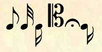
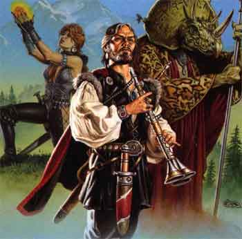
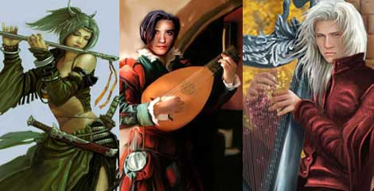
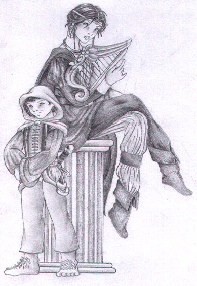
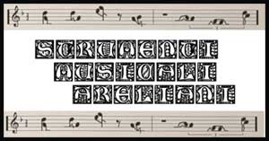

<html>

<head>
<meta http-equiv="Content-Language" content="it">
<meta http-equiv="Content-Type" content="text/html; charset=windows-1252">
<title>Cantori di Arelia</title>
<meta name="GENERATOR" content="Microsoft FrontPage 6.0">
<meta name="ProgId" content="FrontPage.Editor.Document">
<meta name="Microsoft Border" content="none, default">
</head>

<body background="images/Burnedparch.jpg" bgcolor="#CCCCFF">

<blockquote>
  <blockquote>
    <p align="center"></p>
    <p align="justify"><b><font color="#CC6699">Questa nuova classe di personaggi
    è stata elaborata in sostituzione della classe dei bardi. I bardi come
    originariamente ideati nell'<i>Advanced Dungeons &amp; Dragons seconda
    edizione</i> sono infatti incompatibili con l'ambientazione areliana. Per
    questo motivo è stata elaborata questa nuova classe di Cantori che meglio
    combacia con la struttura di ruolo di Arelia.</font></b></p>
    <p align="center"></p>
    <blockquote>
      <p align="center"></p>
    </blockquote>
    <table border="1" width="85%">
      <tr>
        <td width="36%"><b><font color="#000000">Abilità minime</font></b></td>
        <td width="64%"><b><font color="#000000">Carisma 10, Destrezza 9,
          Intelligenza 9</font></b></td>
      </tr>
      <tr>
        <td width="36%"><b><font color="#000000">Abilità primaria</font></b></td>
        <td width="64%"><b><font color="#000000">Carisma <font size="1">(con 16
          bonus 10% esperienza)</font></font></b></td>
      </tr>
      <tr>
        <td width="36%"><b><font color="#000000">Razze permesse</font></b></td>
        <td width="64%"><b><font color="#000000">Umani, Elfi, Mezzi-elfi</font></b></td>
      </tr>
      <tr>
        <td width="36%"><font color="#000000"><b>Competenze</b></font></td>
        <td width="64%"><font color="#000000"><b>Generali, Ladri, Maghi</b></font></td>
      </tr>
      <tr>
        <td width="36%"><font color="#000000"><b>Allineamenti&nbsp;</b></font></td>
        <td width="64%"><font color="#000000"><b>Qualsiasi non Malvagio e non
          Legale</b></font></td>
      </tr>
    </table>
    <blockquote>
      <p align="center">&nbsp;&nbsp;&nbsp;&nbsp; </p>
		<p align="center"></p>
    </blockquote>
    <p align="justify"><font color="#000000"><b>I Cantori sono un classe di
    personaggio ibrido e versatile. Si tratta di personaggi che hanno scoperto
    come la musica possa essere una naturale catalizzatrice di energie magiche.
    Attraverso l'elaborazione di spartiti complessi nei quali sono combinate
    note e formule magiche i Cantori sono in grado di utilizzare magie che
    influiscono sulla mente delle altre creature, ciò avviene in due modi. I
    Cantori possono utilizzare della musica in grado di scatenare energia magica
    per aiutare i propri compagni oppure possono studiare magia utilizzata dai
    maghi e lanciarla sostituendo le formule magiche alle note.&nbsp;</b></font></p>
    <p align="justify"><b><font color="#000000">Oltre alla loro musica i Cantori
    possono usare qualsiasi arma da tiro, da lancio o da corpo a corpo, </font><font color="#990099">non
    possono però utilizzare armi da corpo a copro a due mani e scudi</font><font color="#000000">.
    Devono infatti avere una mano sempre libera per suonare il loro strumento.
    Solo attraverso la musica del loro strumento possono infatti scatenare le
    energie magiche. Possono inoltre indossare ogni armatura ma</font><font color="#990099">
    le corazze di metallo</font><font color="#FF0000"> </font><font color="#000000">(tranne
    la <i>chain mail elfica</i>)</font><font color="#FF0000"> </font><font color="#990099">non
    gli permettono di suonare in modo tale da poter ottenere effetti magici e
    non gli permettono di usare le loro abilità speciali</font><font color="#000000">.</font></b></p>
    <p align="justify"><b><font color="#000000">I Cantori ricevono alla creazione
    del personaggio la competenza <i>bonus</i> : <i>Musical Instrument</i>.
    Devono quindi scegliere un solo strumento attraverso il quale sono in grado di
    lanciare le magie (non potranno farlo con strumenti diversi di cui non 
	conoscono l'utilizzo, nulla impedendo, ovviamente, al Cantore di imparare ad 
	usare anche diversi strumenti acquisendo nuovamente la relativa competenza).</font></b></p>
    <p align="center"></p>
    <blockquote>
      <p align="center"></p>
    </blockquote>
    <p align="justify"><font color="#000000"><b>I Cantori hanno imparato una
    speciale arte che gli permette di studiare la magia dei maghi trasformando
    le formule magiche in formule musicali composte da note e parole magiche,
    inoltre hanno sostituito i movimenti corporei usati dai maghi con
    l'attività di suonare lo strumento musicale da loro scelto. Ciò gli
    permette di lanciare le magie anche indossando armature leggere.</b></font></p>
    <p align="justify"><font color="#000000"><b>Ogni Cantore infatti sa suonare uno
    strumento musicale determinato (scelto alla creazione del personaggio) e lo
    userà per lanciare le magie o per effettuare le ballate magiche. Ogni volta
    che il Cantore vorrà lanciare una magia dovrà suonare in modo perfetto il
    proprio strumento e la difficoltà della musica dipenderà dalla potenza
    della magia che il Cantore vuole lanciare.</b></font></p>
    <p align="justify"><b><font color="#000000">In termini di gioco per ogni
    incantesimo che il Cantore vuole lanciare deve superare un </font><font color="#990099">prova
    sull'abilità </font></b><font color="#990099"><b><i>Musical Instrument</i></b></font><b><font color="#990099">
    con una penalità supplementare pari a -1 per livello di potere
    dell'incantesimo</font><font color="#000000">. Se la prova non ha successo
    la magia fallisce e il cantore perde i punti magia necessari a lanciarla.</font></b></p>
    <p align="justify"><b><font color="#000000">Attraverso questa loro arte i
    Cantori sono in grado di lanciare </font><font color="#990099"><u>unicamente
    le magie della scuola <i>Charm</i></u></font><font color="#000000">. Solo le
    formule utilizzate da questa scuola sono compatibili con l'arte musicale
    sviluppata dai Cantori. I Cantori inoltre </font><font color="#990099">non
    sono in grado di imparare magie del sesto livello di potere o superiori</font><font color="#000000">.</font></b></p>
    <p align="justify"><b><font color="#000000">Come i maghi i Cantori
    dovranno imparare la magia e scriverla in spartiti magici (si tratta dei
    libri di magia dei Cantori) che hanno la stessa dimensione e gli stessi
    costi dei libri di magia dei maghi. I Cantori possono imparare le magie
    leggendole da un libro magico di un mago o da uno spartito magico di un
    altro Cantore. Come i maghi i Cantori devono di volta in volta studiare e
    ripassare le loro magie per ricordare bene le note e le parole magiche. I
    Cantori utilizzeranno le stesse regole dei maghi ai fini dello studio della
    magia, ma </font><font color="#990099">il loro punteggio di intelligenza
    sarà sostituito da quello del carisma</font><font color="#000000">. Gli
    spartiti dei Cantori possono essere decifrati solo dai Cantori stessi e da
    loro utilizzati (nemmeno la magia <i>Read Magic</i> permette a un mago di
    decifrare e utilizzate lo spartito di un Cantore). Le formule magiche dei
    Cantori non possono però in nessun caso essere trasposte su pergamene
    magiche.</font></b></p>
    <p align="justify"><b><font color="#000000">I Cantori apprendono la magia come i maghi ma al momento in cui diventano padroni
    delle formule magiche devono, per utilizzarle, trasformarle con la loro arte
    e scriverla nello spartito.</font></b></p>
    <p align="justify"><b><font color="#000000">Come i maghi i Cantori utilizzano <i>punti
    magia</i> per lanciare gli incantesimi e le regole utilizzate dai maghi (<a href="sistema_dei_punti_magia.htm">vedi</a>)
    con le seguenti eccezioni : I Cantori </font><font color="#990099">non
    possono lanciare oltre i loro punti magia e non possono in nessun modo
    lanciare gli incantesimi modificandone gli effetti</font><font color="#000000">
    (non sono quindi in grado di usare queste tecniche
    : lancio a livello superiore, lancio a casting time ridotto, lancio
    aumentando il casting time, lancio a livello ridotto).</font></b></p>
    <p align="left"><b><font color="#000000">I Cantori hanno una progressione
    differenziata per i punti magia come rappresentato in questa tavola (i
    Cantori hanno a disposizione solo punti magia generici) :</font></b></p>
    <table border="1" width="59%">
      <tr>
        <td width="10%" align="center"><font face="Book Antiqua" size="2"><b>Livello 
		<br>
		di esperienza&nbsp;</b></font></td>
        <td width="16%" align="center"><font face="Book Antiqua" size="2"><b>I livello 
		<br>
		di potere</b></font></td>
        <td width="16%" align="center"><font face="Book Antiqua" size="2"><b>II livello 
		<br>
		di potere</b></font></td>
        <td width="16%" align="center"><font face="Book Antiqua" size="2"><b>III livello 
		<br>
		di potere</b></font></td>
        <td width="17%" align="center"><font face="Book Antiqua" size="2"><b>IV livello 
		<br>
		di potere</b></font></td>
        <td width="17%" align="center"><font face="Book Antiqua" size="2"><b>V livello 
		<br>
		di potere</b></font></td>
      </tr>
      <tr>
        <td width="10%" align="center"><b>1°</b></td>
        <td width="16%" align="center"><b>6</b></td>
        <td width="16%" align="center"><b>-</b></td>
        <td width="16%" align="center"><b>-</b></td>
        <td width="17%" align="center"><b>-</b></td>
        <td width="17%" align="center"><b>-</b></td>
      </tr>
      <tr>
        <td width="10%" align="center"><b>2°</b></td>
        <td width="16%" align="center"><b>9</b></td>
        <td width="16%" align="center"><b>-</b></td>
        <td width="16%" align="center"><b>-</b></td>
        <td width="17%" align="center"><b>-</b></td>
        <td width="17%" align="center"><b>-</b></td>
      </tr>
      <tr>
        <td width="10%" align="center"><b>3°</b></td>
        <td width="16%" align="center"><b>12</b></td>
        <td width="16%" align="center"><b>6</b></td>
        <td width="16%" align="center"><b>-</b></td>
        <td width="17%" align="center"><b>-</b></td>
        <td width="17%" align="center"><b>-</b></td>
      </tr>
      <tr>
        <td width="10%" align="center"><b>4°</b></td>
        <td width="16%" align="center"><b>15</b></td>
        <td width="16%" align="center"><b>9</b></td>
        <td width="16%" align="center"><b>-</b></td>
        <td width="17%" align="center"><b>-</b></td>
        <td width="17%" align="center"><b>-</b></td>
      </tr>
      <tr>
        <td width="10%" align="center"><b>5°</b></td>
        <td width="16%" align="center"><b>18</b></td>
        <td width="16%" align="center"><b>12</b></td>
        <td width="16%" align="center"><b>6</b></td>
        <td width="17%" align="center"><b>-</b></td>
        <td width="17%" align="center"><b>-</b></td>
      </tr>
      <tr>
        <td width="10%" align="center"><b>6°</b></td>
        <td width="16%" align="center"><b>21</b></td>
        <td width="16%" align="center"><b>15</b></td>
        <td width="16%" align="center"><b>9</b></td>
        <td width="17%" align="center"><b>-</b></td>
        <td width="17%" align="center"><b>-</b></td>
      </tr>
      <tr>
        <td width="10%" align="center"><b>7°</b></td>
        <td width="16%" align="center"><b>24</b></td>
        <td width="16%" align="center"><b>18</b></td>
        <td width="16%" align="center"><b>12</b></td>
        <td width="17%" align="center"><b>6</b></td>
        <td width="17%" align="center"><b>-</b></td>
      </tr>
      <tr>
        <td width="10%" align="center"><b>8°</b></td>
        <td width="16%" align="center"><b>27</b></td>
        <td width="16%" align="center"><b>21</b></td>
        <td width="16%" align="center"><b>15</b></td>
        <td width="17%" align="center"><b>9</b></td>
        <td width="17%" align="center"><b>-</b></td>
      </tr>
      <tr>
        <td width="10%" align="center"><b>9°</b></td>
        <td width="16%" align="center"><b>30</b></td>
        <td width="16%" align="center"><b>24</b></td>
        <td width="16%" align="center"><b>18</b></td>
        <td width="17%" align="center"><b>12</b></td>
        <td width="17%" align="center"><b>6</b></td>
      </tr>
      <tr>
        <td width="10%" align="center"><b>10°</b></td>
        <td width="16%" align="center"><b>33</b></td>
        <td width="16%" align="center"><b>27</b></td>
        <td width="16%" align="center"><b>21</b></td>
        <td width="17%" align="center"><b>15</b></td>
        <td width="17%" align="center"><b>9</b></td>
      </tr>
      <tr>
        <td width="10%" align="center"><b>11°</b></td>
        <td width="16%" align="center"><b>36</b></td>
        <td width="16%" align="center"><b>30</b></td>
        <td width="16%" align="center"><b>24</b></td>
        <td width="17%" align="center"><b>18</b></td>
        <td width="17%" align="center"><b>12</b></td>
      </tr>
      <tr>
        <td width="10%" align="center"><b>12°</b></td>
        <td width="16%" align="center"><b>39</b></td>
        <td width="16%" align="center"><b>33</b></td>
        <td width="16%" align="center"><b>27</b></td>
        <td width="17%" align="center"><b>21</b></td>
        <td width="17%" align="center"><b>15</b></td>
      </tr>
      <tr>
        <td width="10%" align="center"><b>13°</b></td>
        <td width="16%" align="center"><b>42</b></td>
        <td width="16%" align="center"><b>36</b></td>
        <td width="16%" align="center"><b>30</b></td>
        <td width="17%" align="center"><b>24</b></td>
        <td width="17%" align="center"><b>18</b></td>
      </tr>
      <tr>
        <td width="10%" align="center"><b>14°</b></td>
        <td width="16%" align="center"><b>44</b></td>
        <td width="16%" align="center"><b>39</b></td>
        <td width="16%" align="center"><b>33</b></td>
        <td width="17%" align="center"><b>27</b></td>
        <td width="17%" align="center"><b>21</b></td>
      </tr>
      <tr>
        <td width="10%" align="center"><b>15°</b></td>
        <td width="16%" align="center"><b>46</b></td>
        <td width="16%" align="center"><b>42</b></td>
        <td width="16%" align="center"><b>36</b></td>
        <td width="17%" align="center"><b>30</b></td>
        <td width="17%" align="center"><b>24</b></td>
      </tr>
      <tr>
        <td width="10%" align="center"><b>16°</b></td>
        <td width="16%" align="center"><b>48</b></td>
        <td width="16%" align="center"><b>44</b></td>
        <td width="16%" align="center"><b>39</b></td>
        <td width="17%" align="center"><b>33</b></td>
        <td width="17%" align="center"><b>27</b></td>
      </tr>
      <tr>
        <td width="10%" align="center"><b>17°</b></td>
        <td width="16%" align="center"><b>50</b></td>
        <td width="16%" align="center"><b>46</b></td>
        <td width="16%" align="center"><b>42</b></td>
        <td width="17%" align="center"><b>36</b></td>
        <td width="17%" align="center"><b>30</b></td>
      </tr>
      <tr>
        <td width="10%" align="center"><b>18°</b></td>
        <td width="16%" align="center"><b>52</b></td>
        <td width="16%" align="center"><b>48</b></td>
        <td width="16%" align="center"><b>44</b></td>
        <td width="17%" align="center"><b>39</b></td>
        <td width="17%" align="center"><b>33</b></td>
      </tr>
      <tr>
        <td width="10%" align="center"><b>19°</b></td>
        <td width="16%" align="center"><b>54</b></td>
        <td width="16%" align="center"><b>50</b></td>
        <td width="16%" align="center"><b>46</b></td>
        <td width="17%" align="center"><b>42</b></td>
        <td width="17%" align="center"><b>36</b></td>
      </tr>
      <tr>
        <td width="10%" align="center"><b>20°</b></td>
        <td width="16%" align="center"><b>55</b></td>
        <td width="16%" align="center"><b>52</b></td>
        <td width="16%" align="center"><b>48</b></td>
        <td width="17%" align="center"><b>44</b></td>
        <td width="17%" align="center"><b>39</b></td>
      </tr>
    </table>
    <p align="left"><b><font color="#000000">I Cantori ottengono punti magia
    supplementari se hanno un elevato punteggio di carisma secondo questa tavola
    :</font></b></p>
    <table>
      <tr>
        <td style="BACKGROUND: black; BORDER-BOTTOM: black 0.75pt solid; BORDER-LEFT: black 0.75pt solid; BORDER-RIGHT: black 0.75pt solid; BORDER-TOP: black 0.75pt solid; PADDING-BOTTOM: 0cm; PADDING-LEFT: 3.5pt; PADDING-RIGHT: 3.5pt; PADDING-TOP: 0cm; WIDTH: 122.2pt; mso-shading: white; mso-pattern: solid black" vAlign="top" width="163">
          <p align="center" class="MsoNormal" style="TEXT-ALIGN: center"><b style="mso-bidi-font-weight: normal"><font face="Bookman Old Style" size="2" color="#FFCC66">Punteggio
          di Carisma</O:P>
          </font></b></p>
        </td>
        <td style="BACKGROUND: black; BORDER-BOTTOM: black 0.75pt solid; BORDER-LEFT: medium none; BORDER-RIGHT: black 0.75pt solid; BORDER-TOP: black 0.75pt solid; PADDING-BOTTOM: 0cm; PADDING-LEFT: 3.5pt; PADDING-RIGHT: 3.5pt; PADDING-TOP: 0cm; WIDTH: 122.2pt; mso-shading: white; mso-pattern: solid black; mso-border-left-alt: solid black .75pt" vAlign="top" width="163" align="center">
          <p align="center" class="MsoNormal" style="TEXT-ALIGN: center"><b style="mso-bidi-font-weight: normal"><font face="Bookman Old Style" size="2" color="#FFCC66">Punti
          I Livello Potere<O:P>
          </O:P>
          </font></b></p>
        </td>
        <td style="BACKGROUND: black; BORDER-BOTTOM: black 0.75pt solid; BORDER-LEFT: medium none; BORDER-RIGHT: black 0.75pt solid; BORDER-TOP: black 0.75pt solid; PADDING-BOTTOM: 0cm; PADDING-LEFT: 3.5pt; PADDING-RIGHT: 3.5pt; PADDING-TOP: 0cm; WIDTH: 122.2pt; mso-shading: white; mso-pattern: solid black; mso-border-left-alt: solid black .75pt" vAlign="top" width="163" align="center">
          <p class="MsoHeading8"><b><font face="Bookman Old Style" size="2" color="#FFCC66">Punti
          II Livello Potere</font></b></p>
        </td>
        <td style="BACKGROUND: black; BORDER-BOTTOM: black 0.75pt solid; BORDER-LEFT: medium none; BORDER-RIGHT: black 0.75pt solid; BORDER-TOP: black 0.75pt solid; PADDING-BOTTOM: 0cm; PADDING-LEFT: 3.5pt; PADDING-RIGHT: 3.5pt; PADDING-TOP: 0cm; WIDTH: 122.2pt; mso-shading: white; mso-pattern: solid black; mso-border-left-alt: solid black .75pt" vAlign="top" width="163" align="center">
          <p align="center" class="MsoNormal" style="TEXT-ALIGN: center"><b style="mso-bidi-font-weight: normal"><font face="Bookman Old Style" size="2" color="#FFCC66">Punti
          III Livello Potere<O:P>
          </O:P>
          </font></b></p>
        </td>
      </tr>
      <tr>
        <td style="BORDER-BOTTOM: black 0.75pt solid; BORDER-LEFT: black 0.75pt solid; BORDER-RIGHT: black 0.75pt solid; BORDER-TOP: medium none; PADDING-BOTTOM: 0cm; PADDING-LEFT: 3.5pt; PADDING-RIGHT: 3.5pt; PADDING-TOP: 0cm; WIDTH: 122.2pt; mso-border-top-alt: solid black .75pt" vAlign="top" width="163">
          <p align="center" class="MsoNormal" style="TEXT-ALIGN: center"><b style="mso-bidi-font-weight: normal"><font face="Bookman Old Style" size="2" color="#000000">12
          – 13<O:P>
          </O:P>
          </font></b></p>
        </td>
        <td style="BORDER-BOTTOM: black 0.75pt solid; BORDER-LEFT: medium none; BORDER-RIGHT: black 0.75pt solid; BORDER-TOP: medium none; PADDING-BOTTOM: 0cm; PADDING-LEFT: 3.5pt; PADDING-RIGHT: 3.5pt; PADDING-TOP: 0cm; WIDTH: 122.2pt; mso-border-left-alt: solid black .75pt; mso-border-top-alt: solid black .75pt" vAlign="top" width="163">
          <p align="center" class="MsoNormal" style="TEXT-ALIGN: center"><span style="mso-bidi-font-size: 10.0pt; mso-bidi-font-family: Times New Roman"><font face="Bookman Old Style" size="2" color="#000000"><b style="mso-bidi-font-weight: normal; mso-bidi-font-size: 10.0pt; mso-bidi-font-family: Times New Roman">1</b><b style="mso-bidi-font-weight: normal"><O:P>
          </O:P>
          </b></font></span></p>
        </td>
        <td style="BORDER-BOTTOM: black 0.75pt solid; BORDER-LEFT: medium none; BORDER-RIGHT: black 0.75pt solid; BORDER-TOP: medium none; PADDING-BOTTOM: 0cm; PADDING-LEFT: 3.5pt; PADDING-RIGHT: 3.5pt; PADDING-TOP: 0cm; WIDTH: 122.2pt; mso-border-left-alt: solid black .75pt; mso-border-top-alt: solid black .75pt" vAlign="top" width="163">
          <p align="center" class="MsoNormal" style="TEXT-ALIGN: center"><b style="mso-bidi-font-weight: normal"><span style="mso-bidi-font-size: 10.0pt; mso-bidi-font-family: Times New Roman"><font face="Bookman Old Style" size="2" color="#000000">-<O:P>
          </O:P>
          </font></span></b></p>
        </td>
        <td style="BORDER-BOTTOM: black 0.75pt solid; BORDER-LEFT: medium none; BORDER-RIGHT: black 0.75pt solid; BORDER-TOP: medium none; PADDING-BOTTOM: 0cm; PADDING-LEFT: 3.5pt; PADDING-RIGHT: 3.5pt; PADDING-TOP: 0cm; WIDTH: 122.2pt; mso-border-left-alt: solid black .75pt; mso-border-top-alt: solid black .75pt" vAlign="top" width="163">
          <p align="center" class="MsoNormal" style="TEXT-ALIGN: center"><b style="mso-bidi-font-weight: normal"><span style="mso-bidi-font-size: 10.0pt; mso-bidi-font-family: Times New Roman"><font face="Bookman Old Style" size="2" color="#000000">-<O:P>
          </O:P>
          </font></span></b></p>
        </td>
      </tr>
      <tr>
        <td style="BORDER-BOTTOM: black 0.75pt solid; BORDER-LEFT: black 0.75pt solid; BORDER-RIGHT: black 0.75pt solid; BORDER-TOP: medium none; PADDING-BOTTOM: 0cm; PADDING-LEFT: 3.5pt; PADDING-RIGHT: 3.5pt; PADDING-TOP: 0cm; WIDTH: 122.2pt; mso-border-top-alt: solid black .75pt" vAlign="top" width="163">
          <p align="center" class="MsoNormal" style="TEXT-ALIGN: center"><b style="mso-bidi-font-weight: normal"><font face="Bookman Old Style" size="2" color="#000000">14
          – 15<O:P>
          </O:P>
          </font></b></p>
        </td>
        <td style="BORDER-BOTTOM: black 0.75pt solid; BORDER-LEFT: medium none; BORDER-RIGHT: black 0.75pt solid; BORDER-TOP: medium none; PADDING-BOTTOM: 0cm; PADDING-LEFT: 3.5pt; PADDING-RIGHT: 3.5pt; PADDING-TOP: 0cm; WIDTH: 122.2pt; mso-border-left-alt: solid black .75pt; mso-border-top-alt: solid black .75pt" vAlign="top" width="163">
          <p align="center" class="MsoNormal" style="TEXT-ALIGN: center"><span style="mso-bidi-font-size: 10.0pt; mso-bidi-font-family: Times New Roman"><font face="Bookman Old Style" size="2" color="#000000"><b style="mso-bidi-font-weight: normal; mso-bidi-font-size: 10.0pt; mso-bidi-font-family: Times New Roman">2</b><b style="mso-bidi-font-weight: normal"><O:P>
          </O:P>
          </b></font></span></p>
        </td>
        <td style="BORDER-BOTTOM: black 0.75pt solid; BORDER-LEFT: medium none; BORDER-RIGHT: black 0.75pt solid; BORDER-TOP: medium none; PADDING-BOTTOM: 0cm; PADDING-LEFT: 3.5pt; PADDING-RIGHT: 3.5pt; PADDING-TOP: 0cm; WIDTH: 122.2pt; mso-border-left-alt: solid black .75pt; mso-border-top-alt: solid black .75pt" vAlign="top" width="163">
          <p align="center" class="MsoNormal" style="TEXT-ALIGN: center"><span style="mso-bidi-font-size: 10.0pt; mso-bidi-font-family: Times New Roman"><font face="Bookman Old Style" size="2" color="#000000"><b style="mso-bidi-font-weight: normal; mso-bidi-font-size: 10.0pt; mso-bidi-font-family: Times New Roman">-</b><b style="mso-bidi-font-weight: normal"><O:P>
          </O:P>
          </b></font></span></p>
        </td>
        <td style="BORDER-BOTTOM: black 0.75pt solid; BORDER-LEFT: medium none; BORDER-RIGHT: black 0.75pt solid; BORDER-TOP: medium none; PADDING-BOTTOM: 0cm; PADDING-LEFT: 3.5pt; PADDING-RIGHT: 3.5pt; PADDING-TOP: 0cm; WIDTH: 122.2pt; mso-border-left-alt: solid black .75pt; mso-border-top-alt: solid black .75pt" vAlign="top" width="163">
          <p align="center" class="MsoNormal" style="TEXT-ALIGN: center"><b style="mso-bidi-font-weight: normal"><span style="mso-bidi-font-size: 10.0pt; mso-bidi-font-family: Times New Roman"><font face="Bookman Old Style" size="2" color="#000000">-<O:P>
          </O:P>
          </font></span></b></p>
        </td>
      </tr>
      <tr>
        <td style="BORDER-BOTTOM: black 0.75pt solid; BORDER-LEFT: black 0.75pt solid; BORDER-RIGHT: black 0.75pt solid; BORDER-TOP: medium none; PADDING-BOTTOM: 0cm; PADDING-LEFT: 3.5pt; PADDING-RIGHT: 3.5pt; PADDING-TOP: 0cm; WIDTH: 122.2pt; mso-border-top-alt: solid black .75pt" vAlign="top" width="163">
          <p align="center" class="MsoNormal" style="TEXT-ALIGN: center"><b style="mso-bidi-font-weight: normal"><font face="Bookman Old Style" size="2" color="#000000">16<O:P>
          </O:P>
          </font></b></p>
        </td>
        <td style="BORDER-BOTTOM: black 0.75pt solid; BORDER-LEFT: medium none; BORDER-RIGHT: black 0.75pt solid; BORDER-TOP: medium none; PADDING-BOTTOM: 0cm; PADDING-LEFT: 3.5pt; PADDING-RIGHT: 3.5pt; PADDING-TOP: 0cm; WIDTH: 122.2pt; mso-border-left-alt: solid black .75pt; mso-border-top-alt: solid black .75pt" vAlign="top" width="163">
          <p align="center" class="MsoNormal" style="TEXT-ALIGN: center"><span style="mso-bidi-font-size: 10.0pt; mso-bidi-font-family: Times New Roman"><font face="Bookman Old Style" size="2" color="#000000"><b style="mso-bidi-font-weight: normal; mso-bidi-font-size: 10.0pt; mso-bidi-font-family: Times New Roman">2</b><b style="mso-bidi-font-weight: normal"><O:P>
          </O:P>
          </b></font></span></p>
        </td>
        <td style="BORDER-BOTTOM: black 0.75pt solid; BORDER-LEFT: medium none; BORDER-RIGHT: black 0.75pt solid; BORDER-TOP: medium none; PADDING-BOTTOM: 0cm; PADDING-LEFT: 3.5pt; PADDING-RIGHT: 3.5pt; PADDING-TOP: 0cm; WIDTH: 122.2pt; mso-border-left-alt: solid black .75pt; mso-border-top-alt: solid black .75pt" vAlign="top" width="163">
          <p align="center" class="MsoNormal" style="TEXT-ALIGN: center"><span style="mso-bidi-font-size: 10.0pt; mso-bidi-font-family: Times New Roman"><font face="Bookman Old Style" size="2" color="#000000"><b style="mso-bidi-font-weight: normal; mso-bidi-font-size: 10.0pt; mso-bidi-font-family: Times New Roman">1</b><b style="mso-bidi-font-weight: normal"><O:P>
          </O:P>
          </b></font></span></p>
        </td>
        <td style="BORDER-BOTTOM: black 0.75pt solid; BORDER-LEFT: medium none; BORDER-RIGHT: black 0.75pt solid; BORDER-TOP: medium none; PADDING-BOTTOM: 0cm; PADDING-LEFT: 3.5pt; PADDING-RIGHT: 3.5pt; PADDING-TOP: 0cm; WIDTH: 122.2pt; mso-border-left-alt: solid black .75pt; mso-border-top-alt: solid black .75pt" vAlign="top" width="163">
          <p align="center" class="MsoNormal" style="TEXT-ALIGN: center"><b style="mso-bidi-font-weight: normal"><span style="mso-bidi-font-size: 10.0pt; mso-bidi-font-family: Times New Roman"><font face="Bookman Old Style" size="2" color="#000000">-<O:P>
          </O:P>
          </font></span></b></p>
        </td>
      </tr>
      <tr>
        <td style="BORDER-BOTTOM: black 0.75pt solid; BORDER-LEFT: black 0.75pt solid; BORDER-RIGHT: black 0.75pt solid; BORDER-TOP: medium none; PADDING-BOTTOM: 0cm; PADDING-LEFT: 3.5pt; PADDING-RIGHT: 3.5pt; PADDING-TOP: 0cm; WIDTH: 122.2pt; mso-border-top-alt: solid black .75pt" vAlign="top" width="163">
          <p align="center" class="MsoNormal" style="TEXT-ALIGN: center"><b style="mso-bidi-font-weight: normal"><font face="Bookman Old Style" size="2" color="#000000">17<O:P>
          </O:P>
          </font></b></p>
        </td>
        <td style="BORDER-BOTTOM: black 0.75pt solid; BORDER-LEFT: medium none; BORDER-RIGHT: black 0.75pt solid; BORDER-TOP: medium none; PADDING-BOTTOM: 0cm; PADDING-LEFT: 3.5pt; PADDING-RIGHT: 3.5pt; PADDING-TOP: 0cm; WIDTH: 122.2pt; mso-border-left-alt: solid black .75pt; mso-border-top-alt: solid black .75pt" vAlign="top" width="163">
          <p align="center" class="MsoNormal" style="TEXT-ALIGN: center"><b style="mso-bidi-font-weight: normal"><span style="mso-bidi-font-size: 10.0pt; mso-bidi-font-family: Times New Roman"><font face="Bookman Old Style" size="2" color="#000000">3<O:P>
          </O:P>
          </font></span></b></p>
        </td>
        <td style="BORDER-BOTTOM: black 0.75pt solid; BORDER-LEFT: medium none; BORDER-RIGHT: black 0.75pt solid; BORDER-TOP: medium none; PADDING-BOTTOM: 0cm; PADDING-LEFT: 3.5pt; PADDING-RIGHT: 3.5pt; PADDING-TOP: 0cm; WIDTH: 122.2pt; mso-border-left-alt: solid black .75pt; mso-border-top-alt: solid black .75pt" vAlign="top" width="163">
          <p align="center" class="MsoNormal" style="TEXT-ALIGN: center"><b style="mso-bidi-font-weight: normal"><span style="mso-bidi-font-size: 10.0pt; mso-bidi-font-family: Times New Roman"><font face="Bookman Old Style" size="2" color="#000000">2<O:P>
          </O:P>
          </font></span></b></p>
        </td>
        <td style="BORDER-BOTTOM: black 0.75pt solid; BORDER-LEFT: medium none; BORDER-RIGHT: black 0.75pt solid; BORDER-TOP: medium none; PADDING-BOTTOM: 0cm; PADDING-LEFT: 3.5pt; PADDING-RIGHT: 3.5pt; PADDING-TOP: 0cm; WIDTH: 122.2pt; mso-border-left-alt: solid black .75pt; mso-border-top-alt: solid black .75pt" vAlign="top" width="163">
          <p align="center" class="MsoNormal" style="TEXT-ALIGN: center"><b style="mso-bidi-font-weight: normal"><span style="mso-bidi-font-size: 10.0pt; mso-bidi-font-family: Times New Roman"><font face="Bookman Old Style" size="2" color="#000000">-<O:P>
          </O:P>
          </font></span></b></p>
        </td>
      </tr>
      <tr>
        <td style="BORDER-BOTTOM: black 0.75pt solid; BORDER-LEFT: black 0.75pt solid; BORDER-RIGHT: black 0.75pt solid; BORDER-TOP: medium none; PADDING-BOTTOM: 0cm; PADDING-LEFT: 3.5pt; PADDING-RIGHT: 3.5pt; PADDING-TOP: 0cm; WIDTH: 122.2pt; mso-border-top-alt: solid black .75pt" vAlign="top" width="163">
          <p align="center" class="MsoNormal" style="TEXT-ALIGN: center"><b style="mso-bidi-font-weight: normal"><font face="Bookman Old Style" size="2" color="#000000">18<O:P>
          </O:P>
          </font></b></p>
        </td>
        <td style="BORDER-BOTTOM: black 0.75pt solid; BORDER-LEFT: medium none; BORDER-RIGHT: black 0.75pt solid; BORDER-TOP: medium none; PADDING-BOTTOM: 0cm; PADDING-LEFT: 3.5pt; PADDING-RIGHT: 3.5pt; PADDING-TOP: 0cm; WIDTH: 122.2pt; mso-border-left-alt: solid black .75pt; mso-border-top-alt: solid black .75pt" vAlign="top" width="163">
          <p align="center" class="MsoNormal" style="TEXT-ALIGN: center"><b style="mso-bidi-font-weight: normal"><span style="mso-bidi-font-size: 10.0pt; mso-bidi-font-family: Times New Roman"><font face="Bookman Old Style" size="2" color="#000000">4<O:P>
          </O:P>
          </font></span></b></p>
        </td>
        <td style="BORDER-BOTTOM: black 0.75pt solid; BORDER-LEFT: medium none; BORDER-RIGHT: black 0.75pt solid; BORDER-TOP: medium none; PADDING-BOTTOM: 0cm; PADDING-LEFT: 3.5pt; PADDING-RIGHT: 3.5pt; PADDING-TOP: 0cm; WIDTH: 122.2pt; mso-border-left-alt: solid black .75pt; mso-border-top-alt: solid black .75pt" vAlign="top" width="163">
          <p align="center" class="MsoNormal" style="TEXT-ALIGN: center"><b style="mso-bidi-font-weight: normal"><span style="mso-bidi-font-size: 10.0pt; mso-bidi-font-family: Times New Roman"><font face="Bookman Old Style" size="2" color="#000000">2<O:P>
          </O:P>
          </font></span></b></p>
        </td>
        <td style="BORDER-BOTTOM: black 0.75pt solid; BORDER-LEFT: medium none; BORDER-RIGHT: black 0.75pt solid; BORDER-TOP: medium none; PADDING-BOTTOM: 0cm; PADDING-LEFT: 3.5pt; PADDING-RIGHT: 3.5pt; PADDING-TOP: 0cm; WIDTH: 122.2pt; mso-border-left-alt: solid black .75pt; mso-border-top-alt: solid black .75pt" vAlign="top" width="163">
          <p align="center" class="MsoNormal" style="TEXT-ALIGN: center"><b style="mso-bidi-font-weight: normal"><span style="mso-bidi-font-size: 10.0pt; mso-bidi-font-family: Times New Roman"><font face="Bookman Old Style" size="2" color="#000000">-<O:P>
          </O:P>
          </font></span></b></p>
        </td>
      </tr>
      <tr>
        <td style="BORDER-BOTTOM: black 0.75pt solid; BORDER-LEFT: black 0.75pt solid; BORDER-RIGHT: black 0.75pt solid; BORDER-TOP: medium none; PADDING-BOTTOM: 0cm; PADDING-LEFT: 3.5pt; PADDING-RIGHT: 3.5pt; PADDING-TOP: 0cm; WIDTH: 122.2pt; mso-border-top-alt: solid black .75pt" vAlign="top" width="163">
          <p align="center" class="MsoNormal" style="TEXT-ALIGN: center"><b style="mso-bidi-font-weight: normal"><font face="Bookman Old Style" size="2" color="#000000">19<O:P>
          </O:P>
          </font></b></p>
        </td>
        <td style="BORDER-BOTTOM: black 0.75pt solid; BORDER-LEFT: medium none; BORDER-RIGHT: black 0.75pt solid; BORDER-TOP: medium none; PADDING-BOTTOM: 0cm; PADDING-LEFT: 3.5pt; PADDING-RIGHT: 3.5pt; PADDING-TOP: 0cm; WIDTH: 122.2pt; mso-border-left-alt: solid black .75pt; mso-border-top-alt: solid black .75pt" vAlign="top" width="163">
          <p align="center" class="MsoNormal" style="TEXT-ALIGN: center"><b style="mso-bidi-font-weight: normal"><span style="mso-bidi-font-size: 10.0pt; mso-bidi-font-family: Times New Roman"><font face="Bookman Old Style" size="2" color="#000000">4<O:P>
          </O:P>
          </font></span></b></p>
        </td>
        <td style="BORDER-BOTTOM: black 0.75pt solid; BORDER-LEFT: medium none; BORDER-RIGHT: black 0.75pt solid; BORDER-TOP: medium none; PADDING-BOTTOM: 0cm; PADDING-LEFT: 3.5pt; PADDING-RIGHT: 3.5pt; PADDING-TOP: 0cm; WIDTH: 122.2pt; mso-border-left-alt: solid black .75pt; mso-border-top-alt: solid black .75pt" vAlign="top" width="163">
          <p align="center" class="MsoNormal" style="TEXT-ALIGN: center"><b style="mso-bidi-font-weight: normal"><span style="mso-bidi-font-size: 10.0pt; mso-bidi-font-family: Times New Roman"><font face="Bookman Old Style" size="2" color="#000000">3<O:P>
          </O:P>
          </font></span></b></p>
        </td>
        <td style="BORDER-BOTTOM: black 0.75pt solid; BORDER-LEFT: medium none; BORDER-RIGHT: black 0.75pt solid; BORDER-TOP: medium none; PADDING-BOTTOM: 0cm; PADDING-LEFT: 3.5pt; PADDING-RIGHT: 3.5pt; PADDING-TOP: 0cm; WIDTH: 122.2pt; mso-border-left-alt: solid black .75pt; mso-border-top-alt: solid black .75pt" vAlign="top" width="163">
          <p align="center" class="MsoNormal" style="TEXT-ALIGN: center"><b style="mso-bidi-font-weight: normal"><span style="mso-bidi-font-size: 10.0pt; mso-bidi-font-family: Times New Roman"><font face="Bookman Old Style" size="2" color="#000000">-<O:P>
          </O:P>
          </font></span></b></p>
        </td>
      </tr>
      <tr>
        <td style="BORDER-BOTTOM: black 0.75pt solid; BORDER-LEFT: black 0.75pt solid; BORDER-RIGHT: black 0.75pt solid; BORDER-TOP: medium none; PADDING-BOTTOM: 0cm; PADDING-LEFT: 3.5pt; PADDING-RIGHT: 3.5pt; PADDING-TOP: 0cm; WIDTH: 122.2pt; mso-border-top-alt: solid black .75pt" vAlign="top" width="163">
          <p align="center" class="MsoNormal" style="TEXT-ALIGN: center"><b style="mso-bidi-font-weight: normal"><font face="Bookman Old Style" size="2" color="#000000">20
          +<O:P>
          </O:P>
          </font></b></p>
        </td>
        <td style="BORDER-BOTTOM: black 0.75pt solid; BORDER-LEFT: medium none; BORDER-RIGHT: black 0.75pt solid; BORDER-TOP: medium none; PADDING-BOTTOM: 0cm; PADDING-LEFT: 3.5pt; PADDING-RIGHT: 3.5pt; PADDING-TOP: 0cm; WIDTH: 122.2pt; mso-border-left-alt: solid black .75pt; mso-border-top-alt: solid black .75pt" vAlign="top" width="163">
          <p align="center" class="MsoNormal" style="TEXT-ALIGN: center"><b style="mso-bidi-font-weight: normal"><span style="mso-bidi-font-size: 10.0pt; mso-bidi-font-family: Times New Roman"><font face="Bookman Old Style" size="2" color="#000000">4<O:P>
          </O:P>
          </font></span></b></p>
        </td>
        <td style="BORDER-BOTTOM: black 0.75pt solid; BORDER-LEFT: medium none; BORDER-RIGHT: black 0.75pt solid; BORDER-TOP: medium none; PADDING-BOTTOM: 0cm; PADDING-LEFT: 3.5pt; PADDING-RIGHT: 3.5pt; PADDING-TOP: 0cm; WIDTH: 122.2pt; mso-border-left-alt: solid black .75pt; mso-border-top-alt: solid black .75pt" vAlign="top" width="163">
          <p align="center" class="MsoNormal" style="TEXT-ALIGN: center"><b style="mso-bidi-font-weight: normal"><span style="mso-bidi-font-size: 10.0pt; mso-bidi-font-family: Times New Roman"><font face="Bookman Old Style" size="2" color="#000000">3<O:P>
          </O:P>
          </font></span></b></p>
        </td>
        <td style="BORDER-BOTTOM: black 0.75pt solid; BORDER-LEFT: medium none; BORDER-RIGHT: black 0.75pt solid; BORDER-TOP: medium none; PADDING-BOTTOM: 0cm; PADDING-LEFT: 3.5pt; PADDING-RIGHT: 3.5pt; PADDING-TOP: 0cm; WIDTH: 122.2pt; mso-border-left-alt: solid black .75pt; mso-border-top-alt: solid black .75pt" vAlign="top" width="163">
          <p align="center" class="MsoNormal" style="TEXT-ALIGN: center"><b style="mso-bidi-font-weight: normal"><span style="mso-bidi-font-size: 10.0pt; mso-bidi-font-family: Times New Roman"><font face="Bookman Old Style" size="2" color="#000000">1<O:P>
          </O:P>
          </font></span></b></p>
        </td>
      </tr>
    </table>
    <p align="justify"><b><font color="#000000">Per quanto riguarda i </font><font color="#990099">gradi
    di conoscenza</font><font color="#000000">, i Cantori </font><font color="#990099">non
    hanno i gradi di conoscenza come i maghi, non ottengono dunque punti magia
    bonus o altri benefici.</font><font color="#000000"> Per imparare le magie
    della scuola <i>Charm </i>i Cantori si considerano sempre avere lo stesso
    grado di conoscenza della magia che vogliono imparare se questa è di 1°,
    2° o 3° grado di difficoltà e si considerano avere 1 grado in meno di
    conoscenza quando provano ad imparare magie di 4° di difficoltà. L'ausilio
    di un maestro di magia o di un altro Cantore che conosce quell'incantesimi
    non da alcun beneficio al Cantore dato che lo sforzo di trasformazione delle
    formule magiche in note è un'attività personalissima.&nbsp;</font></b></p>
    <p align="center"></p>
    <p align="center"></p>
    <p align="justify"><b><font color="#000000">Oltre a poter studiare la magia dei
    maghi e riformularla in spariti musicali i Cantori sono in grado di
    provocare effetti magici diretti attraverso alcune musiche magiche che sanno
    suonare. Si tratta di una caratteristica propria dei cantori e nessuna altra
    classe di personaggi può ottenere gli stessi effetti.</font></b></p>
    <p align="justify"><b><font color="#000000">Per poter suonare queste canzoni 
	il Cantore non deve indossare corazze più pesanti di quelle leggere ossia 
	dei </font><font color="#993333">vestiti imbottiti</font>,<font color="#003300"> </font><font color="#000000">
	della corazza di </font><font color="#993333">cuoio</font><font color="#000000"> 
	e della corazza di </font><font color="#993333">cuoio rinforzata</font><font color="#000000">.</font></b></p>
    <p align="justify"><b><font color="#000000">La musica magica dei Cantori è in
    grado di provocare una serie di tipologie di effetti differenti e a loro volta
    all'interno delle tipologie esistono quattro differenti livelli di
    complessità musicale che sono la melodia, la ballata, la canzone, la
    sinfonia.&nbsp;</font></b></p>
    <p align="justify"><b>Si considerano<font color="#0000FF"> magie a tutti gli
    effetti </font><font color="#000000">lanciate da un mago di pari livello del
    Cantore, possono essere soggette alla magia<i> dispel magic</i>, e si
    considerano come incantesimi di un livello di potere pari ai punti canto
    necessari per lanciarle.</font></b></p>
    <p align="left"><b><font color="#000000"> Le tipologie sono le seguenti :</font></b></p>
    <p align="left"><b><font color="#0000FF" size="4">Musica
    Ristoratrice&nbsp;&nbsp;&nbsp; -&nbsp;&nbsp;&nbsp;&nbsp; Durata Lunga</font></b></p>
    <p align="justify"><b><font color="#000000">Si tratta di una musica che è in
    grado di aiutare magicamente il recupero delle energie fisiche e mentali
    perse. Ogni ora in cui si è sottoposti agli effetti di questa musica si
    recuperano magicamente punti ferita, punti magia e punti fatica,
    indipendentemente dall'attività svolta e con eventuale cumulo con i punti
    recuperati in altro modo magico o naturale (i soggetti in coma non ricevono
    alcun beneficio da questa musica).</font></b></p>
    <table border="1" width="72%">
      <tr>
        <td width="40%"><b>Livello della Musica</b></td>
        <td width="19%" align="center"><b>Punti Fatica</b></td>
        <td width="20%" align="center"><b>Punti Magia</b></td>
        <td width="20%" align="center"><b>Punti Ferita</b></td>
      </tr>
      <tr>
        <td width="40%"><b>Melodia Ristoratrice</b></td>
        <td width="19%" align="center"><b>1</b></td>
        <td width="20%" align="center"><b>1</b></td>
        <td width="20%" align="center"><b>-</b></td>
      </tr>
      <tr>
        <td width="40%"><b>Ballata Ristoratrice</b></td>
        <td width="19%" align="center"><b>1</b></td>
        <td width="20%" align="center"><b>1</b></td>
        <td width="20%" align="center"><b>1</b></td>
      </tr>
      <tr>
        <td width="40%"><b>Canzone Ristoratrice</b></td>
        <td width="19%" align="center"><b>2</b></td>
        <td width="20%" align="center"><b>2</b></td>
        <td width="20%" align="center"><b>1</b></td>
      </tr>
      <tr>
        <td width="40%"><b>Sinfonia Ristoratrice</b></td>
        <td width="19%" align="center"><b>2</b></td>
        <td width="20%" align="center"><b>2</b></td>
        <td width="20%" align="center"><b>2</b></td>
      </tr>
    </table>
    <p align="left"><b><font color="#0000FF" size="4">Musica della Marcia&nbsp;&nbsp;&nbsp;
    -&nbsp;&nbsp;&nbsp;&nbsp; Durata Lunga</font></b></p>
    <p align="justify"><font color="#000000"><b>Si tratta di una musica che è in
    grado di aumentare il fattore di movimento delle creature che ne subiscono
    gli effetti. Questo tipo di musica non ha effetto sulle cavalcature ma è
    utilizzabile solo in caso di marcia a piedi. Si noti che in caso di ballata 
	e di sinfonia, oltre a ricevere punti movimento <i>bonus </i>chi è sotto 
	l'effetto della musica riceverà temporaneamente anche la competenza <i>
	Sprint </i></b><font face="Garamond" size="2">(Guerrieri - Ladri, 1 slot, 
	Destrezza -2)</font><b>. Se chi riceve questo beneficio già possiede tale competenza 
	costui riceverà un <i>bonus </i>di +2 alla prova nella stessa. &nbsp;</b></font></p>
    <table border="1" width="65%">
      <tr>
        <td width="25%"><b>Livello della Musica</b></td>
        <td width="45%" align="center"><b>Punti supplementari di fattore
          movimento</b></td>
      </tr>
      <tr>
        <td width="25%"><b>Melodia della Marcia</b></td>
        <td width="45%" align="center"><b>2</b></td>
      </tr>
      <tr>
        <td width="25%"><b>Ballata della Marcia</b></td>
        <td width="45%" align="center"><b>2 + <i>Sprint</i></b></td>
      </tr>
      <tr>
        <td width="25%"><b>Canzone della Marcia</b></td>
        <td width="45%" align="center"><b>4</b></td>
      </tr>
      <tr>
        <td width="25%"><b>Sinfonia della Marcia</b></td>
        <td width="45%" align="center"><b>4 + <i>Sprint</i></b></td>
      </tr>
    </table>
    <p align="left"><b><font color="#0000FF" size="4">Musica di
    Guerra&nbsp;&nbsp;&nbsp; -&nbsp;&nbsp;&nbsp;&nbsp; Durata Breve</font></b></p>
    <p align="justify"><b><font color="#000000">Si tratta di una musica che è in
    grado di incitare chi ne subisce gli effetti nella battaglia aumentando la
    precisione dei colpi e la loro violenza. Si noti che il danno 
supplementare, essendo considerato un danno supplementare dovuto alla forza, non 
potrà comunque permettere di superare il limite massimo di bonus al danno 
utilizzabile durante un attacco come fissato dal dado di danno base dell'arma. </font></b>
	<font color="#000000"><b>Gli effetti di questa musica magica 
	si ottengono dall'inizio di ogni round di effetto della canzone. </b> </font></p>
    <table border="1" width="72%">
      <tr>
        <td width="31%"><b>Livello della Musica</b></td>
        <td width="34%" align="center"><b>Bonus al Tiro per Colpire</b></td>
        <td width="34%" align="center"><b>Bonus ai Danni</b></td>
      </tr>
      <tr>
        <td width="31%"><b>Melodia di Guerra</b></td>
        <td width="34%" align="center"><b>-</b></td>
        <td width="34%" align="center"><b>+1</b></td>
      </tr>
      <tr>
        <td width="31%"><b>Ballata di Guerra</b></td>
        <td width="34%" align="center"><b>+1</b></td>
        <td width="34%" align="center"><b>+1</b></td>
      </tr>
      <tr>
        <td width="31%"><b>Canzone di Guerra</b></td>
        <td width="34%" align="center"><b>+1</b></td>
        <td width="34%" align="center"><b>+2</b></td>
      </tr>
      <tr>
        <td width="31%"><b>Sinfonia di Guerra</b></td>
        <td width="34%" align="center"><b>+2</b></td>
        <td width="34%" align="center"><b>+2</b></td>
      </tr>
    </table>
    <p align="left"><b><font color="#0000FF" size="4">Musica della Resistenza&nbsp;&nbsp;&nbsp;
    -&nbsp;&nbsp;&nbsp;&nbsp; Durata Breve&nbsp;</font></b></p>
    <p align="justify"><b><font color="#000000">Si tratta di una musica che è in
    grado di aumentare la capacità di resistenza delle creature incrementando i
    loro tiri salvezza e infondendo coraggio. Gli effetti di questa musica 
	magica si ottengono all'inizio di ogni round di effetto della canzone. </font></b></p>
    <table border="1" width="66%">
      <tr>
        <td width="41%"><b>Livello della Musica</b></td>
        <td width="56%" align="center"><b>Bonus ai Tiri Salvezza</b></td>
      </tr>
      <tr>
        <td width="41%"><b>Melodia della Resistenza </b></td>
        <td width="56%" align="center"><b>+ 1</b></td>
      </tr>
      <tr>
        <td width="41%"><b>Ballata della Resistenza </b></td>
        <td width="56%" align="center"><b>+ 2</b></td>
      </tr>
      <tr>
        <td width="41%"><b>Canzone della Resistenza </b></td>
        <td width="56%" align="center"><b>+ 2 , immunità a <i>fear</i></b></td>
      </tr>
      <tr>
        <td width="41%"><b>Sinfonia della Resistenza </b></td>
        <td width="56%" align="center"><b>+ 3 , immunità a <i>fear</i></b></td>
      </tr>
    </table>
    <p align="left"><b><font color="#0000FF" size="4">Musica della Sconfitta &nbsp; -&nbsp;&nbsp;&nbsp;&nbsp;Durata
    Breve</font></b></p>
    <p align="justify"><b><font color="#000000">Si tratta di una musica che è in
    grado di scoraggiare i nemici in battaglia in modo da farli combattere meno
    valorosamente. Ogni round in cui sono sottoposti a questa magia gli 
	avversari subiscono
    una penalità all'iniziativa ed ai loro tiri per colpire che varia a seconda 
	del livello della musica utilizzato. Hanno però la possibilità di evitare 
	del tutto gli effetti di questa musica magica superando un tiro salvezza 
	contro incantesimi mentali quando la musica è lanciata. Gli effetti di 
	questa musica magica si ottengono all'inizio di ogni round di effetto della 
	canzone. </font></b></p>
    <table border="1" width="66%">
      <tr>
        <td width="44%"><b>Livello della Musica</b></td>
        <td width="25%" align="center"><b><i>Malus</i> Iniziativa</b></td>
        <td width="25%" align="center"><b><i>Malus</i> Thac0</b></td>
      </tr>
      <tr>
        <td width="44%"><b>Melodia della Sconfitta</b></td>
        <td width="25%" align="center"><b>-1</b></td>
        <td width="25%" align="center"><b>nessuno</b></td>
      </tr>
      <tr>
        <td width="44%"><b>Ballata della Sconfitta</b></td>
        <td width="25%" align="center"><b>-1</b></td>
        <td width="25%" align="center"><b>-1</b></td>
      </tr>
      <tr>
        <td width="44%"><b>Canzone della Sconfitta</b></td>
        <td width="25%" align="center"><b>-2</b></td>
        <td width="25%" align="center"><b>-1</b></td>
      </tr>
      <tr>
        <td width="44%"><b>Sinfonia della Sconfitta</b></td>
        <td width="25%" align="center"><b>-2</b></td>
        <td width="25%" align="center"><b>-2</b></td>
      </tr>
    </table>
    <p align="left"><b><font color="#0000FF" size="4">Musica della Rapidità di 
	Attacco &nbsp; -&nbsp;&nbsp;&nbsp;&nbsp; Durata
    Breve</font></b></p>
<table border="0" align="center" width="89%" style="border-collapse: collapse">
	<tr>
		<td width="281">
		</td>
		<td>
		<p align="justify"><b><font color="#000000">Questa musica rende 
	incredibilmente rapidi gli attacchi delle creature. In particolare, coloro 
	che si trovano sotto gli effetti di questa musica ricevono un bonus 
	all'iniziativa dei propri attacchi che aumenta con la potenza della canzone. 
	Si noti che tale beneficio si applica solo al fattore iniziativa degli 
	attacchi effettuati con armi (anche da lancio o da tiro) o con attacchi 
	fisici, mentre non modifica il fattore iniziativa di ogni altra azione (si 
	consideri ad esempio il fattore iniziativa dell'azione di movimento ed il 
	casting time degli incantesimi). Inoltre, il fattore iniziativa di un 
	qualsiasi attacco non potrà, comunque, risultare minore di +1. Si noti che 
	non sarà modificato con questa canzone il fattore iniziativa degli attacchi 
	che risultano effetto diretto di un incantesimo (si pensi ad esempio al 
	fattore iniziativa degli attacchi con la sfera elettrificata creata con la 
	magia <i>Lorgan Shocking Iron Ball</i>). Oltre a velocizzare le azioni di 
	attacco un ulteriore effetto di questa musica è quello di donare attacchi 
	extra. Chi è sotto gli effetti di questa canzone ottiene un attacco extra 
	(si tratta di un attacco multiplo non simultaneo) che avverrà alla fine del 
	round. Le creature dovranno decidere, nella fase delle intenzioni, quale 
	degli attacchi possibili ripetere alla fine del round. L'attacco extra è 
	ottenuto alla fine del primo round di durata della musica nonché alla fine 
	di un numero successivo di round che diminuisce al crescere della potenza 
	della canzone (una </font>Melodia della Rapidità di Attacco<font color="#000000">, 
	ad esempio, donerà un attacco extra alla fine del 1°, del 6°, dell'11° round 
	di durata della musica e così via, laddove, invece una </font>Sinfonia della Rapidità 
	di Attacco<font color="#000000"> donerà un attacco extra alla fine del 1°, 
	del 3°, del 5° round di durata della musica e così via). Gli effetti di questa musica non 
	sono cumulabili con le magie che velocizzano (come<i> </i>ad esempio<i> haste</i>), 
	applicandosi in tal caso gli effetti della magia che garantisce il maggior 
	numero di attacchi od il migliore <i>bonus</i> all'iniziativa.<br>
&nbsp;</font></b><i><b><font face="Times New Roman" size="4" color="#CCCCFF">&nbsp; </font></b></i>
		</td>
	</tr>
	</table>
    <table border="1" width="71%">
      <tr>
        <td width="42%"><b>Livello della Musica</b></td>
        <td width="29%" align="center"><b><i>Bonus</i> Iniziativa</b></td>
        <td width="25%" align="center"><b><i>Attacchi Extra</i></b></td>
      </tr>
      <tr>
        <td width="42%"><b>Melodia della Rapidità di Attacco</b></td>
        <td width="29%" align="center"><b>-1</b></td>
        <td width="25%" align="center"><b>1 ogni 5 rounds</b></td>
      </tr>
      <tr>
        <td width="42%"><b>Ballata della Rapidità di Attacco</b></td>
        <td width="29%" align="center"><b>-2</b></td>
        <td width="25%" align="center"><b>1 ogni 4 rounds</b></td>
      </tr>
      <tr>
        <td width="42%"><b>Canzone della Rapidità di Attacco</b></td>
        <td width="29%" align="center"><b>-3</b></td>
        <td width="25%" align="center"><b>1 ogni 3 rounds</b></td>
      </tr>
      <tr>
        <td width="42%"><b>Sinfonia della Rapidità di Attacco</b></td>
        <td width="29%" align="center"><b>-4</b></td>
        <td width="25%" align="center"><b>1 ogni 2 rounds</b></td>
      </tr>
    </table>
    <p align="left"><b><font color="#0000FF" size="4">Musica degli Eroi &nbsp; -&nbsp;&nbsp;&nbsp;&nbsp; Durata
    Breve</font></b></p>
    <p align="justify"><font color="#000000"><b>Si tratta di una musica che rende i
    personaggi che ne ricevono gli effetti particolarmente eroici, costoro
    continuano a combattere nonostante subiscono ferite che li portano sotto lo
    zero, almeno fino a che durano gli effetti della canzone, se superano il
    limite massimo concesso dalla canzone però muoiono istantaneamente senza
    passare per il coma. In particolare possono combattere per un ammontare di
    punti ferita sotto lo zero pari al massimo dei punti ferita della loro
    classe per livello, senza modificatori per la costituzione, moltiplicato per
    i dadi vita eroici della canzone. Al termine della canzone subiranno gli
    effetti della posizione a cui si trovano e quindi se sotto zero potranno
    morire o andare in coma. Inoltre durante la durata della canzone, entro la
    fine dei suoi effetti, potranno decidere, <u>prima che avvenga il tiro</u>,
    di tirare due dadi invece che uno e scegliere poi uno dei due risultati per
    una loro qualsiasi azione in combattimento. </b></font><b><font color="#000000">
	Gli effetti di questa musica magica si ottengono all'inizio di ogni round di 
	effetto della canzone. </font></b></p>
    <table border="1" width="75%">
      <tr>
        <td width="40%"><b>Livello della Musica</b></td>
        <td width="28%" align="center"><b>Numero di Tiri Doppi</b></td>
        <td width="28%" align="center"><b><i>Dadi Vita Eroici</i></b></td>
      </tr>
      <tr>
        <td width="40%"><b>Melodia degli Eroi</b></td>
        <td width="28%" align="center"><b>1</b></td>
        <td width="28%" align="center"><b>nessuno</b></td>
      </tr>
      <tr>
        <td width="40%"><b>Ballata degli Eroi</b></td>
        <td width="28%" align="center"><b>1</b></td>
        <td width="28%" align="center"><b>1 Dado Vita</b></td>
      </tr>
      <tr>
        <td width="40%"><b>Canzone degli Eroi</b></td>
        <td width="28%" align="center"><b>2</b></td>
        <td width="28%" align="center"><b>1 Dado Vita</b></td>
      </tr>
      <tr>
        <td width="40%"><b>Sinfonia degli Eroi</b></td>
        <td width="28%" align="center"><b>2</b></td>
        <td width="28%" align="center"><b>2 Dadi Vita</b></td>
      </tr>
    </table>
    <p align="left"><b><font color="#0000FF" size="4">Musica
    dell'Orrore&nbsp;&nbsp;&nbsp; -&nbsp;&nbsp;&nbsp;&nbsp; Durata Breve</font></b></p>
    <p align="justify"><font color="#000000"><b>Si tratta di una musica che riempie
    d'orrore i cuori degli avversari. Gli effetti di questa canzone possono 
	essere evitati superando un tiro salvezza contro incantesimi mentali. 
	Trattandosi di un effetto di <i>fear</i> le creature immuni alla paura o che 
	posseggono un valore morale pari a <i>fearless</i> sono immuni agli effetti 
	di questa canzone. Chi subisce gli effetti di questa canzone, divenendo 
	terrorizzato dalla paura, sarà costretto a restare tremante ed immobile al 
	suo posto senza poter compiere alcuna azione. La vittima, però, non subirà 
	alcuna penalità alla propria classe armatura ed ai propri tiri salvezza in 
	quanto costei potrà continuare a difendersi passivamente. Qualora, prima 
	dello scadere della canzone, la vittima subirà un qualsiasi attacco diretto 
	(od altra forma di azione ostile direttamente lesiva e dannosa) gli effetti 
	della canzone termineranno alla fine del round in corso. In tale ultimo caso, 
	dunque, la creatura sarà libera di agire a partire dal round successivo a 
	quello in cui è stata attaccata</b></font></p>
    <table border="1" width="79%">
      <tr>
        <td width="38%"><b>Livello della Musica</b></td>
        <td width="31%" align="center"><b>DV massimi/creature</b></td>
        <td width="26%" align="center"><b>Modifica Tiro Salvezza</b></td>
      </tr>
      <tr>
        <td width="38%"><b>Melodia dell'Orrore</b></td>
        <td width="31%" align="center"><b>2</b></td>
        <td width="26%" align="center"><b>+2 <i>bonus</i></b></td>
      </tr>
      <tr>
        <td width="38%"><b>Ballata dell'Orrore</b></td>
        <td width="31%" align="center"><b>4</b></td>
        <td width="26%" align="center"><b>+1 <i>bonus</i></b></td>
      </tr>
      <tr>
        <td width="38%"><b>Canzone dell'Orrore</b></td>
        <td width="31%" align="center"><b>6</b></td>
        <td width="26%" align="center"><b>nessuna modifica</b></td>
      </tr>
      <tr>
        <td width="38%"><b>Sinfonia dell'Orrore</b></td>
        <td width="31%" align="center"><b>8</b></td>
        <td width="26%" align="center"><b>-1 <i>malus</i></b></td>
      </tr>
    </table>
    <p align="left"><b><font color="#0000FF" size="4">Musica della Ninna
    Nanna&nbsp; -&nbsp;&nbsp; Durata Lunga</font></b></p>
    <p align="justify"><b><font color="#000000">Si tratta di una musica molto dolce
    e lieve, che rilassa chi la ascolta e lo spinge ad addormentarsi, se non
    superano un tiro salvezza contro effetti mentali. Coloro che superano il
    tiro salvezza non si addormentano ma non capiscono d'essere stati sottoposti
    agli effetti d'una magia. Può essere utilizzata soltanto in una condizione
    di non ostilità degli ascoltatori nei confronti del cantore, ed occorre che
    le vittime siano consenzienti ad ascoltare il cantore. Il sonno è indotto
    magicamente, e le creature soggette alla canzone non si sveglieranno
    naturalmente prima del termine della stessa, ma potranno essere svegliate o
    svegliarsi in maniera convenzionale. Vista la speciale natura di questa
    magia, il Cantore non può suonarla in un solo round come di consueto, ma
    deve utilizzare un</font><font color="#FFCC66"> </font>
	<font color="#990099">Casting
    Time di 1 turno</font>.</b></p>
    <table border="1" width="81%">
      <tr>
        <td width="28%"><b>Livello della Musica</b></td>
        <td width="21%" align="center"><b>DV massimi/creature</b></td>
        <td width="20%" align="center"><b>Modifica Tiro Salvezza</b></td>
      </tr>
      <tr>
        <td width="28%"><b>Melodia della Ninna Nanna</b></td>
        <td width="21%" align="center"><b>3</b></td>
        <td width="20%" align="center"><b>+2 <i>bonus</i></b></td>
      </tr>
      <tr>
        <td width="28%"><b>Ballata della Ninna Nanna</b></td>
        <td width="21%" align="center"><b>5</b></td>
        <td width="20%" align="center"><b>+1 <i>bonus</i></b></td>
      </tr>
      <tr>
        <td width="28%"><b>Canzone della Ninna Nanna</b></td>
        <td width="21%" align="center"><b>7</b></td>
        <td width="20%" align="center"><b>nessuna modifica</b></td>
      </tr>
      <tr>
        <td width="28%"><b>Sinfonia della Ninna Nanna</b></td>
        <td width="21%" align="center"><b>9</b></td>
        <td width="20%" align="center"><b>-1 <i>malus</i></b></td>
      </tr>
    </table>
    <p align="left"><b><font color="#0000FF" size="4">Musica
    dell'Agilità&nbsp;&nbsp;&nbsp; -&nbsp;&nbsp;&nbsp;&nbsp; Durata Breve</font></b></p>
    <p align="justify"><b><font color="#000000">Si tratta di una musica che incita
    la prontezza di riflessi di chi la ascolta. La musica dona a costoro un
    bonus al Reaction Adjustment alla destrezza (con conseguente modifica alla
    Classe Armatura), un bonus ad i check di destrezza, ed una percentuale bonus
    di schivata. Questa percentuale si addiziona a chi dovesse già avere una
    percentuale di schivata; coloro che non possiedono una percentuale in
    schivare, l'acquisteranno temporaneamente, con il valore percentuale fisso
    del livello della musica (si applicheranno, quindi, tutte le restrizioni 
	previste dall'arte di combattimento per utilizzare questo movimento 
	difensivo).&nbsp;Gli effetti di questa musica magica si ottengono all'inizio 
	di ogni round di effetto della canzone. </font></b></p>
    <table border="1" width="81%">
      <tr>
        <td width="23%"><b>Livello della Musica</b></td>
        <td width="23%" align="center"><b>Bonus AC</b></td>
        <td width="23%" align="center"><b>Bonus Check</b></td>
        <td width="24%" align="center"><b>Schivata</b></td>
      </tr>
      <tr>
        <td width="23%"><b>Melodia dell'Agilità</b></td>
        <td width="23%" align="center"><b>nessuno</b></td>
        <td width="23%" align="center"><b>+1</b></td>
        <td width="24%" align="center"><b>10%</b></td>
      </tr>
      <tr>
        <td width="23%"><b>Ballata dell'Agilità</b></td>
        <td width="23%" align="center"><b>nessuno</b></td>
        <td width="23%" align="center"><b>+2</b></td>
        <td width="24%" align="center"><b>15%</b></td>
      </tr>
      <tr>
        <td width="23%"><b>Canzone dell'Agilità</b></td>
        <td width="23%" align="center"><b>+1</b></td>
        <td width="23%" align="center"><b>+2</b></td>
        <td width="24%" align="center"><b>20%</b></td>
      </tr>
      <tr>
        <td width="23%"><b>Sinfonia dell'Agilità</b></td>
        <td width="23%" align="center"><b>+2</b></td>
        <td width="23%" align="center"><b>+2</b></td>
        <td width="24%" align="center"><b>25%</b></td>
      </tr>
    </table>
    <p align="left"><b><font color="#0000FF" size="4">Musica della Distruzione&nbsp;&nbsp;&nbsp;
    -&nbsp;&nbsp;&nbsp;Durata Breve&nbsp;</font></b></p>
    <p align="justify"><b><font color="#000000">Si tratta di un acuto fortissimo
    che lacera le membrane e distrutte i timpani degli apparati uditivi delle
    creature che ne sono soggette, provocandogli un certo ammontare di danno
    (<i>sonic</i>) ogni round, a meno che non superino un tiro salvezza contro incantesimi
    mentali. Si noti che il tiro salvezza deve essere effettuato dalle vittime 
	all'inizio di ogni round di effetto e che il danno è prodotto alla fine di 
	tali rounds.&nbsp; Creature senza apparato uditivo non subiscono effetti da questa
    magia (come i non-morti, i costruiti, i vermi, gli insetti, le melme, ecc.). 
	Qualora la vittima di questa musica effettui un tiro salvezza critico 
	tirando un 1 naturale (da 01 a 05 sul dado da 100) costei, oltre a subire i 
	danni della canzone, resterà stordita per 1d3 rounds (a partire dall'inizio 
	del round nel quale effettuano il fallimento critico al tiro salvezza). </font></b></p>
    <table border="1" width="66%">
      <tr>
        <td width="32%"><b>Livello della Musica</b></td>
        <td width="39%" align="center"><b>Danni sonori a round</b></td>
      </tr>
      <tr>
        <td width="32%"><b>Melodia della Distruzione </b></td>
        <td width="39%" align="center"><b>1</b></td>
      </tr>
      <tr>
        <td width="32%"><b>Ballata della Distruzione </b></td>
        <td width="39%" align="center"><b>2</b></td>
      </tr>
      <tr>
        <td width="32%"><b>Canzone della Distruzione </b></td>
        <td width="39%" align="center"><b>3</b></td>
      </tr>
      <tr>
        <td width="32%"><b>Sinfonia della Distruzione </b></td>
        <td width="39%" align="center"><b>4</b></td>
      </tr>
    </table>
    <p align="left"><b><font color="#0000FF" size="4">Requiem della pace eterna&nbsp;
    -&nbsp;&nbsp; Durata Breve&nbsp;</font></b></p>
    <p align="justify"><b><font color="#000000">Si tratta di una musica triste, di
    accompagnamento alla morte. Questa canzone ha effetto sulle creature viventi 
	selezionate annullando la loro aura di energia positiva invisa ai non morti. Per tutta la durata della Canzone,
    indipendentemente dalle azioni precedentemente compiute, i personaggi sulla 
	quale questa magia ha effetto, non possono essere attaccati (od essere 
	vittime di altre deliberate azioni ostili) dai Non-Morti (compreso i 
	Non-Morti che siano stati incontrati durante il mantenimento della musica ma 
	dopo il suo lancio), a meno che
    questi non effettuino un tiro salvezza contro incantesimi (applicando 
	regolarmente l'eventuale <i>Magic Resistance</i> posseduta dal Non-Morto). 
	Si consideri che i
    Non-Morti con intelligenza pari a 0 (none) falliscono automaticamente questo 
	tiro salvezza. Qualora una creatura protetta, durante il mantenimento della 
	musica, commetta un qualsiasi deliberato atto ostile
    nei confronti di uno dei Non-Morti che non poteva attaccarla (ossia uno di 
	quelli che aveva fallito il tiro salvezza) la stessa perderà ogni protezione 
	dovuta alla canzone e quindi potrà essere regolarmente attaccata da tutti i 
	Non-Morti presenti. In quest'ultimo caso, però, la musica continuerà a 
	proteggere gli eventuali altri beneficiari della stessa se regolarmente 
	mantenuta. I Non-Morti che superano i dadi vita normalmente
    influenzabili con il livello della musica selezionato, come indicato nella 
	seguente tabella, non subiscono in alcun caso gli effetti della musica, ciò 
	indipendentemente dal loro punteggio di intelligenza.&nbsp; </font></b></p>
    <table border="1" width="73%">
      <tr>
        <td width="22%"><b>Livello della Musica</b></td>
        <td width="39%" align="center"><b>Dadi Vita massimi dei non morti</b></td>
      </tr>
      <tr>
        <td width="22%"><b>Requiem della Pace Eterna</b></td>
        <td width="39%" align="center"><b>3</b></td>
      </tr>
      <tr>
        <td width="22%"><b>Requiem della Pace Eterna</b></td>
        <td width="39%" align="center"><b>5</b></td>
      </tr>
      <tr>
        <td width="22%"><b>Requiem della Pace Eterna</b></td>
        <td width="39%" align="center"><b>7</b></td>
      </tr>
      <tr>
        <td width="22%"><b>Requiem della Pace Eterna</b></td>
        <td width="39%" align="center"><b>9</b></td>
      </tr>
    </table>
    <p align="center">
	</p>
	<p align="center"><b>IMPARARE LA MUSICA MAGICA</b></p>
	<p align="justify"><b><font color="#000000">Ogni cantore conosce di partenza </font>
	<font color="#990099">2
    tipologie di musiche al 1° livello di esperienza e ne può imparare 1 supplementare ogni
    2 livelli di esperienza</font><font color="#000000"> (3 al 3° livello, 4 al 
	5° livello, 5 al 7° livello e così via). Per imparare una nuova musica il cantore dovrà seguire le
    regole utilizzate per imparare un nuovo incantesimo che sia del
    massimo livello di potere a cui ha accesso in base al suo livello di 
	esperienza, tale musica si considererà come un incantesimo che sia, in ogni 
	caso, di un grado di difficoltà superiore rispetto alla sua conoscenza 
	(indipendentemente dalla conoscenza effettiva della magia posseduta). Un cantore che conosce il
    tipo di musica prescelto e che sia di livello di esperienza pari a quello 
	dell'allievo può insegnare la musica all'allievo che si accinge 
	ad&nbsp; impararla ma occorre che
    passi tutto il tempo necessario in sua compagnia, in tal caso la musica sarà 
	considerata di un grado di difficoltà pari alla conoscenza posseduta dal 
	cantore. Qualora il cantore fallisca nel tentativo di imparare la musica potrà 
	riprovarci appena raggiunto il livello successivo, senza ricevere, però, 
	alcun beneficio dalla circostanza di ripetere il tentativo (non si 
	applicherà, quindi, la regola utilizzata per gli incantesimi dei maghi di 
	considerare la magia di un grado di difficoltà inferiore ad ogni tentativo 
	di impararla successivo al primo). L'accesso 
	allo spartito di una musica per il tempo necessario per provare ad impararla 
	ha un costo di circa 500 corone.</font></b></p>
    <p align="left"><b><font color="#000000">Il lancio di una canzone impiega un
    numero di punti canto pari alla difficoltà della stessa, secondo questa
    tabella :</font></b></p>
    <table border="1" width="83%">
      <tr>
        <td width="24%" align="center"><b>Livello della Musica</b></td>
        <td width="31%" align="center"><b>Punti Canto Necessari</b></td>
      </tr>
      <tr>
        <td width="24%" align="center"><b>Melodia&nbsp; </b></td>
        <td width="31%" align="center"><b> 1</b></td>
      </tr>
      <tr>
        <td width="24%" align="center"><b>Ballata&nbsp; </b></td>
        <td width="31%" align="center"><b>2</b></td>
      </tr>
      <tr>
        <td width="24%" align="center"><b>Canzone </b></td>
        <td width="31%" align="center"><b>3</b></td>
      </tr>
      <tr>
        <td width="24%" align="center"><b>Sinfonia </b></td>
        <td width="31%" align="center"><b>&nbsp;4&nbsp;</b></td>
      </tr>
    </table>
    <p align="left"><b><font color="#000000">Il Cantore ottiene</font><font color="#CC6699">
    </font><font color="#990099">1 punto canto per livello</font><font color="#CC6699">
    </font><font color="#000000">di esperienza più un <i>bonus </i>per il
    Carisma pari a quanto risulta dalla tabella :</font></b></p>
    <table border="1" width="83%">
      <tr>
        <td width="24%" align="center"><b>Punteggio di Carisma</b></td>
        <td width="31%" align="center"><b>Punti Canto <i>Bonus</i></b></td>
      </tr>
      <tr>
        <td width="24%" align="center"><b>16</b></td>
        <td width="31%" align="center"><b><font color="#990099"> 1</font></b></td>
      </tr>
      <tr>
        <td width="24%" align="center"><b>17&nbsp;</b></td>
        <td width="31%" align="center"><b><font color="#990099">2</font></b></td>
      </tr>
      <tr>
        <td width="24%" align="center"><b>18 </b></td>
        <td width="31%" align="center"><b><font color="#990099">3</font></b></td>
      </tr>
      <tr>
        <td width="24%" align="center"><b>19 o +&nbsp;</b></td>
        <td width="31%" align="center"><b><font color="#990099">&nbsp;4&nbsp;</font></b></td>
      </tr>
    </table>
    <p align="center"><b>DURATA DELLE CANZONI</b></p>
	<p align="left"><b><font color="#000000">La durata delle canzoni dipende dal
    loro tipo ed è di due generi :</font></b></p>
    <table border="1" width="82%" id="table1">
      <tr>
        <td width="22%" align="center"><b>Tipo di Durata</b></td>
        <td width="76%" align="center"><b>Durata Effettiva</b></td>
      </tr>
      <tr>
        <td width="22%" align="center"><b>Breve</b></td>
        <td width="76%" align="center"><b><font color="#990099"> 1 round per
          livello&nbsp;<i><font size="2">(il bardo deve suonare e concentrarsi per tutta la
          durata)</font></i></font></b></td>
      </tr>
      <tr>
        <td width="22%" align="center"><b>Lunga</b></td>
        <td width="76%" align="center"><b><font color="#990099">1 ora per
          livello <i><font size="2">(il bardo deve suonare
          e concentrarsi solo nel round di lancio)</font></i></font></b></td>
      </tr>
    </table>
    <p align="justify"><b>Per lanciare le canzoni e per mantenerle in effetto 
	(se si tratta delle canzoni a durata breve) il cantore deve impiegare ogni 
	round un'azione complessa che è compatibile con un'azione di mezzo movimento 
	ma che, come nel caso del lancio degli incantesimi, non può precederla 
	(anche in caso di &quot;mantenimento&quot; di una canzone attiva). </b></p>
	<p align="justify"><b>Un cantore può mantenere attiva un'unica canzone di 
	durata breve alla volta mentre può cumulare gli effetti delle canzoni di 
	durata lunga fra loro non essendo a costui richiesto di suonare per il loro 
	&quot;<i>mantenimento</i>&quot;.</b></p>
	<p align="center"><b>LANCIARE LE CANZONI (<i>CASTING TIME</i>)</b></p>
	<p align="justify"><b><font color="#000000">Le canzoni hanno un fattore di
    iniziativa pari ai punti canto necessari ad essere lanciate e richiedono
    concentrazione ed </font><font color="#990099">una prova sullo strumento
    musicale con un penalità di -1 per le Canzoni e di -2 per le
    Sinfonie</font><font color="#000000">. Se il cantore fallisce la prova nello 
	strumento musicale oppure perde la concentrazione durante il lancio della 
	canzone (o mentre suona la musica per mantenere gli effetti di canzoni di 
	durata breve) la canzone sarà fallita (o terminerà immediatamente e 
	definitivamente i suoi effetti se si trattava di un round di mantenimento) 
	ed il cantore avrà comunque perso tutti i punti canto necessari a suonarla.<br>
	<br>
	In caso di mantenimento di canzoni di durata breve precedentemente lanciate, 
	il cantore dovrà effettuare un nuovo tiro di iniziativa ad ogni nuovo round 
	per determinare quando finisce di suonare la musica necessaria a mantenere 
	gli effetti della canzone magica. In questo caso, non sarà richiesto, però, 
	effettuare ogni round nuove prove sull'utilizzo dello strumento musicale 
	essendo sufficiente l'uso della competenza nel round di lancio della 
	canzone. </font></b></p>
	<p align="justify"><b>I<font color="#000000">n ogni caso, tutte le canzoni svolgeranno i loro effetti 
	sempre a partire dal </font><font color="#0000FF"><i>round</i>
    successivo </font><font color="#000000">a quello di lancio ed a quello in 
	cui è effettuato il loro &quot;mantenimento&quot; se di durata breve (il <i>round </i>di
    lancio non sarà, ovviamente, considerato ai fini della durata della canzone).&nbsp;</font></b></p>
	<p align="center"><b>ACCOMPAGNARE LA MUSICA CON IL CANTO (<i>SINGING</i>)</b></p>
	<p align="justify"><b><font color="#000000">Qualora il cantore abbia anche 
	la competenza </font><font color="#990099"><i>Singing</i> </font><font color="#000000">
	costui potrà utilizzarla per potenziare la propria musica accompagnando con 
	un canto le note musicali. Se il personaggio decide di utilizzare tale 
	competenza costui dovrà effettuare una prova nella stessa. Si noti che 
	occorre che il personaggio utilizzi la competenza unicamente nel primo round 
	di lancio della canzone, non occorrendo ulteriori prove nei successivi round 
	di mantenimento. Ovviamente, però, i benefici dovuti al canto permarranno 
	sino a che il cantore sarà in grado di cantare accompagnando la propria 
	musica (laddove le penalità permarranno indipendentemente dal successivo 
	canto). Per tale motivo, il cantore non potrà parlare mentre effettua o 
	mantiene il proprio canto e se per qualsiasi motivo lo interrompe i benefici 
	saranno perduti definitivamente. <br>
	Se la </font><font color="#0000FF">prova riesce</font><font color="#000000">, 
	il cantore otterrà i seguenti benefici:<br>
	</font>
	</b><font color="#000000"><font face="Book Antiqua" size="2">* I tiri salvezza effettuati dalle vittime della musica del cantore 
	otterranno un <i>malus</i> di -1.<br>
	* Il raggio di azione della musica sarà incrementato di 6 metri.</font><b><br>
	In caso di </b> </font><b><font color="#0000FF">successo critico</font><font color="#000000">, 
	il cantore otterrà i seguenti benefici:<br>
	</font>
	</b><font color="#000000"><font face="Book Antiqua" size="2">* I tiri salvezza effettuati dalle vittime della musica del cantore 
	otterranno un <i>malus</i> di -2.<br>
	* Il raggio di azione della musica sarà incrementato di 12 metri.<br>
	</font><b> Se la </b> </font><b><font color="#FF0000">prova fallisce</font><font color="#000000">, 
	il cantore otterrà le seguenti penalità:<br>
	</font>
	</b><font color="#000000"><font face="Book Antiqua" size="2">* I tiri salvezza effettuati dalle vittime della musica del cantore 
	otterranno un <i>bonus</i> di +1.<br>
	* Il raggio di azione della musica sarà ridotto di 6 metri.<br>
	</font><b>In caso di </b> </font><b><font color="#FF0000">fallimento critico</font><font color="#000000">, 
	il cantore sarà stato così stonato che la canzone sarà fallita ed il cantore 
	avrà comunque perso un unico punto canto, indipendentemente da quelli 
	normalmente necessari a suonarla.&nbsp; </font></b></p>
    <p align="center"><b>RAGGIO DI AZIONE DELLE CANZONI</b></p>
	<p align="justify"><b><font color="#000000">Le canzoni possono avere effetto 
	solo su creature che si trovino entro 30 metri dal bardo al momento di lancio della magia. 
	Per tale motivo, tutte le creature sulle quali il bardo vorrà che la musica 
	abbia effetto devono trovarsi al momento del lancio della magia entro tale 
	distanza dal cantore.
	<br>
	<br>
	Per le </font><font color="#993333">magie a durata breve</font><font color="#000000"> occorre che, per mantenere gli effetti, 
	<u>le 
	creature rimangano a tale distanza dal cantore</u>. Gli effetti, infatti, non si 
	produrranno nei rounds in cui costoro si allontanano dal cantore (qualora 
	rientrino nel raggi di azione durante la durata della magia gli effetti, 
	però, continueranno ad essere applicati). </font></b></p>
	<p align="justify"><b><font color="#000000">Per le </font>
	<font color="#993333">magie a durata lunga</font><font color="#000000"> 
	occorre, invece, che<u> le creature siano presenti entro il raggio di azione 
	al momento del lancio</u> della magia. Potranno, poi, allontanarsi a 
	qualsiasi distanza da cantore continuando ad usufruire degli effetti magici 
	della canzone.</font></b></p>
    <p align="center"><b>AREA DI EFFETTO DELLE CANZONI</b></p>
	<p align="justify"><b><font color="#000000">Ogni canzone può avere effetto su
    1 creatura ogni due livelli di esperienza del cantore (bisogna calcolare anche se stesso
    se vuole che abbia effetto anche su di lui), selezionate dal bardo,
    (ad es. al 3° livello potrà farlo su 2 creature, al
    5° livello potrà farlo su 3 creature, ecc... ).</font></b></p>
    <p align="center"><b>COSTO DELLA MUSICA DEI CANTORI</b></p>
	<p align="justify"><b>I cantori sono soliti farsi pagare per i servigi resi 
	attraverso le loro canzoni. Ovviamente tale richiesta economica non può 
	essere pretesa per quelle musiche che non portano beneficio diretto ai 
	soggetti interessati (si pensi alla <i>musica della sconfitta</i>, alla <i>
	musica della distruzione</i> ed alla <i>musica dell'orrore</i>). Orbene, il 
	costo richiesto è di solito fissato dalle potenti gilde di cantori e si 
	attesta sui seguenti valori medi: Melodia 10 monete d'oro; Ballata 20 monete 
	d'oro: Canzone 35 monete d'oro; Sinfonia 60 monete d'oro. A tale valore base 
	va aggiunto in ogni caso la professionalità del cantore che fa aumentare il 
	costo del 10% per suo livello di esperienza. Il costo delle varie musiche 
	per cantori fino al 10° livello di esperienza può, quindi, essere riportato 
	nella seguente tabella:</b></p>
    <table border="1" width="80%" id="table2">
      <tr>
        <td width="18%" align="center"><b>Tipo di Musica</b></td>
        <td width="7%" align="center"><b>1° livello</b></td>
        <td width="7%" align="center"><b>2° livello</b></td>
        <td width="7%" align="center"><b>3° livello</b></td>
        <td width="7%" align="center"><b>4° livello</b></td>
        <td width="7%" align="center"><b>5° livello</b></td>
        <td width="7%" align="center"><b>6° livello</b></td>
        <td width="7%" align="center"><b>7° livello</b></td>
        <td width="7%" align="center"><b>8° livello</b></td>
        <td width="7%" align="center"><b>9° livello</b></td>
        <td width="7%" align="center"><b>10° livello</b></td>
      </tr>
      <tr>
        <td width="18%" align="center"><b>Melodia&nbsp; </b></td>
        <td width="7%" align="center"><b>11</b></td>
        <td width="7%" align="center"><b>12</b></td>
        <td width="7%" align="center"><b>13</b></td>
        <td width="7%" align="center"><b>14</b></td>
        <td width="7%" align="center"><b>15</b></td>
        <td width="7%" align="center"><b>16</b></td>
        <td width="7%" align="center"><b>17</b></td>
        <td width="7%" align="center"><b>18</b></td>
        <td width="7%" align="center"><b>19</b></td>
        <td width="7%" align="center"><b>20</b></td>
      </tr>
      <tr>
        <td width="18%" align="center"><b>Ballata&nbsp; </b></td>
        <td width="7%" align="center"><b>22</b></td>
        <td width="7%" align="center"><b>24</b></td>
        <td width="7%" align="center"><b>26</b></td>
        <td width="7%" align="center"><b>28</b></td>
        <td width="7%" align="center"><b>30</b></td>
        <td width="7%" align="center"><b>32</b></td>
        <td width="7%" align="center"><b>34</b></td>
        <td width="7%" align="center"><b>36</b></td>
        <td width="7%" align="center"><b>38</b></td>
        <td width="7%" align="center"><b>40</b></td>
      </tr>
      <tr>
        <td width="18%" align="center"><b>Canzone </b></td>
        <td width="7%" align="center"><b>33</b></td>
        <td width="7%" align="center"><b>36</b></td>
        <td width="7%" align="center"><b>39</b></td>
        <td width="7%" align="center"><b>42</b></td>
        <td width="7%" align="center"><b>45</b></td>
        <td width="7%" align="center"><b>48</b></td>
        <td width="7%" align="center"><b>51</b></td>
        <td width="7%" align="center"><b>54</b></td>
        <td width="7%" align="center"><b>58</b></td>
        <td width="7%" align="center"><b>61</b></td>
      </tr>
      <tr>
        <td width="18%" align="center"><b>Sinfonia </b></td>
        <td width="7%" align="center"><b>&nbsp;66&nbsp;</b></td>
        <td width="7%" align="center"><b>72</b></td>
        <td width="7%" align="center"><b>78</b></td>
        <td width="7%" align="center"><b>84</b></td>
        <td width="7%" align="center"><b>90</b></td>
        <td width="7%" align="center"><b>96</b></td>
        <td width="7%" align="center"><b>102</b></td>
        <td width="7%" align="center"><b>108</b></td>
        <td width="7%" align="center"><b>114</b></td>
        <td width="7%" align="center"><b>120</b></td>
      </tr>
    </table>
    <p align="justify"><b>Si tenga presente, inoltre, che qualora la canzone sia 
	lanciata su più di una creatura (ivi compreso lo stesso cantore) il costo 
	complessivo della canzone dovrà essere diviso tra tutti i beneficiari.</b></p>
	<p align="center"></p>
    <p align="center"></p>
    <p align="justify"><b><font color="#000000">Per poter utilizzare una qualsiasi
    di queste abilità speciali il Cantore non deve indossare corazze più
    pesanti di quelle leggere ossia dei </font><font color="#993333">vestiti 
	imbottiti</font>,<font color="#003300"> </font><font color="#000000">della 
	corazza di </font><font color="#993333">cuoio</font><font color="#000000"> e 
	della corazza di </font><font color="#993333">cuoio rinforzata</font><font color="#000000">.</font></b></p>
    <p align="center"><b><font color="#0000FF" size="4">Abilità da <i>Thief</i></font></b></p>
    <p align="justify"><b><font color="#000000">Il Cantore prende alcune abilità
    da <i>thief </i>che migliorano secondo un valore fisso, non modificabile dai
    punteggi di abilità. L'utilizzo delle suddette corazze leggere non modifica il valore
    ottenuto con il livello di esperienza.&nbsp;</font></b></p>
    <table border="1" width="80%">
      <tr>
        <td width="25%" align="center"><b>Livello di esperienza&nbsp;</b></td>
        <td width="25%" align="center"><b>Move Silently</b></td>
        <td width="25%" align="center"><b>Detect Noise</b></td>
        <td width="25%" align="center"><b>Read Languages</b></td>
      </tr>
      <tr>
        <td width="25%" align="center"><b>1°</b></td>
        <td width="25%" align="center"><b>30</b></td>
        <td width="25%" align="center"><b>36</b></td>
        <td width="25%" align="center"><b>50</b></td>
      </tr>
      <tr>
        <td width="25%" align="center"><b>2°</b></td>
        <td width="25%" align="center"><b>33</b></td>
        <td width="25%" align="center"><b>40</b></td>
        <td width="25%" align="center"><b>55</b></td>
      </tr>
      <tr>
        <td width="25%" align="center"><b>3°</b></td>
        <td width="25%" align="center"><b>36</b></td>
        <td width="25%" align="center"><b>43</b></td>
        <td width="25%" align="center"><b>60</b></td>
      </tr>
      <tr>
        <td width="25%" align="center"><b>4°</b></td>
        <td width="25%" align="center"><b>40</b></td>
        <td width="25%" align="center"><b>46</b></td>
        <td width="25%" align="center"><b>65</b></td>
      </tr>
      <tr>
        <td width="25%" align="center"><b>5°</b></td>
        <td width="25%" align="center"><b>43</b></td>
        <td width="25%" align="center"><b>50</b></td>
        <td width="25%" align="center"><b>70</b></td>
      </tr>
      <tr>
        <td width="25%" align="center"><b>6°</b></td>
        <td width="25%" align="center"><b>46</b></td>
        <td width="25%" align="center"><b>53</b></td>
        <td width="25%" align="center"><b>75</b></td>
      </tr>
      <tr>
        <td width="25%" align="center"><b>7°</b></td>
        <td width="25%" align="center"><b>50</b></td>
        <td width="25%" align="center"><b>56</b></td>
        <td width="25%" align="center"><b>80</b></td>
      </tr>
      <tr>
        <td width="25%" align="center"><b>8°</b></td>
        <td width="25%" align="center"><b>53</b></td>
        <td width="25%" align="center"><b>60</b></td>
        <td width="25%" align="center"><b>85</b></td>
      </tr>
      <tr>
        <td width="25%" align="center"><b>9°</b></td>
        <td width="25%" align="center"><b>56</b></td>
        <td width="25%" align="center"><b>63</b></td>
        <td width="25%" align="center"><b>90</b></td>
      </tr>
      <tr>
        <td width="25%" align="center"><b>10°</b></td>
        <td width="25%" align="center"><b>60</b></td>
        <td width="25%" align="center"><b>66</b></td>
        <td width="25%" align="center"><b>95</b></td>
      </tr>
      <tr>
        <td width="25%" align="center"><b>11°</b></td>
        <td width="25%" align="center"><b>63</b></td>
        <td width="25%" align="center"><b>70</b></td>
        <td width="25%" align="center"><b>100</b></td>
      </tr>
      <tr>
        <td width="25%" align="center"><b>12°</b></td>
        <td width="25%" align="center"><b>66</b></td>
        <td width="25%" align="center"><b>73</b></td>
        <td width="25%" align="center"><b>105</b></td>
      </tr>
      <tr>
        <td width="25%" align="center"><b>13°</b></td>
        <td width="25%" align="center"><b>70</b></td>
        <td width="25%" align="center"><b>76</b></td>
        <td width="25%" align="center"><b>110</b></td>
      </tr>
      <tr>
        <td width="25%" align="center"><b>14°</b></td>
        <td width="25%" align="center"><b>73</b></td>
        <td width="25%" align="center"><b>80</b></td>
        <td width="25%" align="center"><b>115</b></td>
      </tr>
      <tr>
        <td width="25%" align="center"><b>15°</b></td>
        <td width="25%" align="center"><b>76</b></td>
        <td width="25%" align="center"><b>83</b></td>
        <td width="25%" align="center"><b>120</b></td>
      </tr>
      <tr>
        <td width="25%" align="center"><b>16°</b></td>
        <td width="25%" align="center"><b>80</b></td>
        <td width="25%" align="center"><b>86</b></td>
        <td width="25%" align="center"><b>125</b></td>
      </tr>
      <tr>
        <td width="25%" align="center"><b>17°</b></td>
        <td width="25%" align="center"><b>83</b></td>
        <td width="25%" align="center"><b>90</b></td>
        <td width="25%" align="center"><b>130</b></td>
      </tr>
      <tr>
        <td width="25%" align="center"><b>18°</b></td>
        <td width="25%" align="center"><b>86</b></td>
        <td width="25%" align="center"><b>93</b></td>
        <td width="25%" align="center"><b>135</b></td>
      </tr>
      <tr>
        <td width="25%" align="center"><b>19°</b></td>
        <td width="25%" align="center"><b>90</b></td>
        <td width="25%" align="center"><b>96</b></td>
        <td width="25%" align="center"><b>140</b></td>
      </tr>
      <tr>
        <td width="25%" align="center"><b>20°</b></td>
        <td width="25%" align="center"><b>93</b></td>
        <td width="25%" align="center"><b>100</b></td>
        <td width="25%" align="center"><b>145</b></td>
      </tr>
    </table>
    <p align="center"><font size="4" color="#0000FF"><b>Canzone della Battaglia</b></font></p>
    <p align="justify"><b><font color="#000000">A partire dal </font>
	<font color="#990099">1° livello di esperienza</font><font color="#000000">
    il Cantore acquisisce automaticamente la possibilità di suonare </font>
	<font color="#008080">
    una sola volta al giorno</font><font color="#000000">
    questa musica speciale, senza necessità di impararla. Questa musica richiede 
	il superamento di un prova nella competenza <i>Musical Instrument</i> con 
	una penalità di -1, ha fattore di iniziativa pari a +3 e richiede come ogni 
	musica la concentrazione del Cantore. Se questa canzone è lanciata con 
	successo, lo stesso cantore sarà incitato alla battaglia e riceverà un bonus 
	ai suoi tiri per colpire ed a danni che varia al crescere del livello di 
	esperienza dello stesso come specificato nella seguente tabella:</font></b></p>
    <table border="1" width="80%" id="table3">
      <tr>
        <td width="25%" align="center"><b>Livello di esperienza&nbsp;</b></td>
        <td width="25%" align="center"><b>Bonus alla Thac0</b></td>
        <td width="25%" align="center"><b>Bonus al Danno</b></td>
      </tr>
      <tr>
        <td width="25%" align="center"><b>1° - 3°</b></td>
        <td width="25%" align="center"><b>+1</b></td>
        <td width="25%" align="center"><b>+1</b></td>
      </tr>
      <tr>
        <td width="25%" align="center"><b>4° - 6°</b></td>
        <td width="25%" align="center"><b>+2</b></td>
        <td width="25%" align="center"><b>+2</b></td>
      </tr>
      <tr>
        <td width="25%" align="center"><b>7° - 9°</b></td>
        <td width="25%" align="center"><b>+3</b></td>
        <td width="25%" align="center"><b>+3</b></td>
      </tr>
      <tr>
        <td width="25%" align="center"><b>10+°</b></td>
        <td width="25%" align="center"><b>+4</b></td>
        <td width="25%" align="center"><b>+4</b></td>
      </tr>
    </table>
    <p align="justify"><b><font color="#000000">
    Si noti che il bonus relativo danno si considererà a tutti gli effetti come 
	un bonus derivante dalla forza al fine del calcolo del bonus massimale di 
	danno applicabile. Inoltre, tale beneficio si applicherà solo nel 
	combattimento con le armi da corpo a corpo e da lancio senza che il Cantore 
	riceva alcun beneficio nell'uso di armi da tiro. Una volta lanciata la 
	canzone, i suoi effetti perdureranno nei successivi </font>
	<font color="#008080">
    5 rounds</font><font color="#000000">, senza che sia richiesta alcuna forma 
	di mantenimento. <br>
	Qualora il cantore abbia anche 
	la competenza </font><font color="#990099"><i>Singing</i> </font><font color="#000000">
	costui potrà utilizzarla per potenziare la canzone effettuando una prova 
	nella stessa.&nbsp; <br>
	Se la </font><font color="#0000FF">prova riesce</font><font color="#000000">, 
	gli effetti della canzone perdureranno per </font><font color="#008080">
    7 rounds</font><font color="#000000">.<br>
	</font></b><font color="#000000"><b>In caso di </b> </font><b><font color="#0000FF">successo critico</font><font color="#000000">, 
	gli effetti della canzone perdureranno per </font><font color="#008080">
    10 rounds</font><font color="#000000">.<br>
	</font>
	</b><font color="#000000"><b> Se la </b> </font><b><font color="#FF0000">prova fallisce</font><font color="#000000">, 
	gli effetti della canzone perdureranno per </font><font color="#008080">
    3 rounds</font><font color="#000000">.<br>
	</font>
	</b><font color="#000000"><b>In caso di </b> </font><b><font color="#FF0000">fallimento critico</font><font color="#000000">, 
	la canzone sarà fallita ed il cantore 
	l'avrà comunque utilizzata per la giornata.&nbsp; </font></b></p>
    <p align="center"><font size="4" color="#0000FF"><b>Musica</b></font><b><font color="#0000FF" size="4"> della Paralisi</font></b></p>
    <p align="justify"><b><font color="#000000">Una volta raggiunto l'</font><font color="#990099">8° livello di esperienza</font><font color="#000000">
    il Cantore acquisisce automaticamente la possibilità di suonare </font>
	<font color="#008080">
    una sola volta al giorno</font><font color="#000000">
    questa musica speciale senza necessità di impararla. Questa musica richiede 
	il superamento di un prova nella competenza <i>Musical Instrument</i> con 
	una penalità di -3, ha fattore di iniziativa pari a +5 e richiede come ogni 
	musica la concentrazione del Cantore. Se questa canzone è lanciata con 
	successo, tutte le creature scelte dal Cantore che si 
	trovano entro 12 metri di raggio dallo stesso dovranno superare un tiro 
	salvezza contro paralisi o rimanere paralizzate (<i>hold</i>) per 1 round per livello del 
	Cantore a partire dallo stesso round di lancio della canzone. Questa musica, come le altre musica a durata breve, richiede il suo &quot;mantenimento&quot; 
	da parte del Cantore (sempre con fattore iniziativa pari a +5). Infatti, qualora per qualsiasi motivo il Cantore 
	interrompa il mantenimento della musica i suoi effetti termineranno 
	immediatamente. </font></b></p>
    <p align="center"><font size="4" color="#0000FF"><b>Musica</b></font><b><font color="#0000FF" size="4"> della Cura
    Miracolosa</font></b></p>
    <p align="justify"><b><font color="#000000">Una volta raggiunto il </font>
	<font color="#990099">9° livello di esperienza</font><font color="#000000">
    il Cantore acquisisce automaticamente la possibilità di suonare </font>
	<font color="#008080">
    una sola volta al giorno</font><font color="#000000">
    questa musica speciale senza necessità di impararla. Questa musica richiede 
	il superamento di un prova nella competenza <i>Musical Instrument</i> con 
	una penalità di -4, ha fattore di iniziativa pari a +6 e richiede come ogni 
	musica la concentrazione del Cantore. Se questa canzone è lanciata con 
	successo, tutte le creature scelte dal Cantore che si trovano entro 9 metri 
	di distanza
    dallo stesso al momento del lancio saranno curate, alla fine del round in 
	corso, per un ammontare di </font><font color="#990099">1 punti ferita +
    1 punto ferita </font><font color="#000000">per livello del Cantore. Si noti 
	che si tratta di cure magiche a tutti gli effetti che sono in grado di fare 
	uscire una creatura dallo stato di coma ma che, però, non sono in grado di 
	annullare alcun effetto di colpi critici (indipendentemente dall'ammontare 
	dei punti ferita curati). Per l'utilizzo di tale musica il cantore potrà 
	pretendere come pagamento, da ogni singola creatura curata, un ammontare di 
	monete d'oro pari al 
	costo di una sua Sinfonia (senza che, quindi, si possa dividere il costo di 
	questa musica, risultando irrilevante in questo caso il numero dei 
	beneficiari).&nbsp;&nbsp; </font></b></p>
    <p align="center"><a href="cantori_di_arelia_strumenti.htm">
	</a></p>
    <p align="left">&nbsp;</p>
    <blockquote>
      <p align="center">&nbsp;</p>
      <p align="center">&nbsp;</p>
    </blockquote>
    <p align="left">&nbsp;</p>
  </blockquote>
</blockquote>

</body>

</html>
